1.1 今日目标
- 了解数据库的发展史
- 了解什么是SQL语句
- 了解启动和停止MySQL服务器
- 能够连接MySQL数据库
- 能够关闭数据库连接
- 能够创建数据库
- 能够查看所有数据库
- 能够修改数据库的字符编码
- 能够删除数据库
- 能够选择数据库
- 能够创建表
- 能够查看当前数据库中的所有表
- 能够查看表结构
- 能够查看创建表的SQL语句
- 能够能够复制表
- 能够给表添加字段
- 能够给表删除字段
- 能够修改表字段
- 能够修改表引擎
- 能够修改表名
- 能够向表中添加数据
- 能够修改表中的数据
- 能够删除表中的数据
1.2 数据库的作用
数据库是存放数据的仓库
数据库：数据库中存放的是表，一个数据库中可以存放多个表
表：表是用来存放数据的。
1.3 数据库的发展史
1.3.1 萌芽阶段：文件系统
最初始的数据库是用磁盘来存储数据的。文件就是最早的数据库。
1.3.2 第一代数据库：层次模型、网状模型
1.3.2.1 层次模型
缺点：
1、 查找不同类的数据效率低了（导航的结构的缺点）
2、 数据不完整（不能区分到底是一个李白还是两个李白）
1.3.2.2 网状模型
网状模型解决了层次数据的数据不完整的问题，但是没有解决层次模型的导航问题。
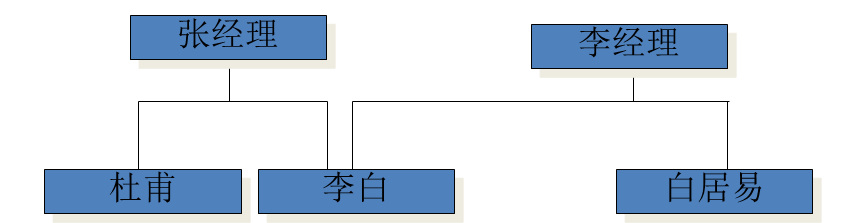
1.3.3 第二代数据库：关系型数据库
特点：
- 每个表都是独立的
- 表与表之间通过公共字段来建立关系

优点：解决了导航问题，并且数据完整性得到解决
缺点：多表查询效率低了
提示：我们现在用的主流的数据库都是关系模型的。
多学一招：NoSQL（非关系型数据库）解决关系型数据库多表查询效率的问题，常见的非关系型数据库有：Redis、mongodb。数据库中存储格式是键值对。
1.4 MySQL安装
1.4.1 获取安装文件

1.4.2 双击安装


1.4.3 MySQL目录
1.5 启动/关闭MySQL服务
1.5.1 方法一：在服务面板中启动或关闭
控制面板项——管理工具——服务，选择相应服务，右键执行操作。

1.5.2 方法二：通过命令行启动\关闭
net start 服务名： 启动MySQL服务
net stop 服务器： 关闭MySQL服务
xxxxxxxxxx注意：必须通过管理员身份启动命令行
1.6 SQL介绍
1.6.1 SQL是什么
Structured Query Language（结构化查询语言），是用来操作关系型数据库的一门语言。这是一个关系型数据库的通用操作语言，也成为标准SQL，也叫SQL-92。
xxxxxxxxxx多学一招：数据库的生产厂商为了占有市场份额，都会在标准SQL的基础上扩展一些自己的东西以吸引用户。
1.6.2 常见的关系型数据库
| 关系型数据库 | 开发公司 | 使用语言 |
|---|---|---|
| SQL Server | 微软公司 | T-SQL |
| Oracle | 甲骨文公司 | PL/SQL |
| MySQL | MySQL AB 公司开发——甲骨文公司收购 | MySQL |
思考：已知标准SQL可以在所有的关系型数据库上运行，在Oracle上编写的PL/SQL能否在MySQL上运行？
答：不能，只能运行标准SQL
1.7 连接服务器
通过命令行面板连接
xxxxxxxxxxhost：主机 -husername：用户名 -upassword：密码 -pport：端口 -P

xxxxxxxxxx多学一招：如果MySQL服务器在本地，IP地址可以省略；如果MySQL服务器用的是3306端口，-P也是可以省略

1.8 关闭连接
x方法一：exit方法二：quit方法三：\qxxxxxxxxxx脚下留心：MySQL中的命令后面要加分号，windows命令行的命令后面不用加分号。
1.9 数据库的操作
1.9.1 显示数据库
xxxxxxxxxx 语法：show databases mysql> show databases;+--------------------+| Database |+--------------------+| information_schema || mysql || performance_schema || test |+--------------------+4 rows in set (0.11 sec)安装MySQL后，MySQL自带了4个数据库
- information_schema：存储了MySQL服务器管理数据库的信息。
- performance_schema：MySQL5.5新增的表，用来保存数据库服务器性能的参数
- mysql：MySQL系统数据库，保存的登录用户名，密码，以及每个用户的权限等等
- test：给用户学习和测试的数据库。
1.9.2 创建数据库
xxxxxxxxxx语法：create database [if not exists] `数据名` [字符编码]创建数据库：
xxxxxxxxxxmysql> create database stu;Query OK, 1 row affected (0.09 sec)如果创建的数据库已存在，就会报错
xxxxxxxxxxmysql> create database stu;ERROR 1007 (HY000): Can't create database 'stu'; database exists解决：创建数据库的时候判断一下数据库是否存在，如果不存在再创建
xxxxxxxxxxmysql> create database if not exists stu;Query OK, 1 row affected, 1 warning (0.00 sec)如果数据库名是关键字和特殊字符要报错
解决：在特殊字符、关键字行加上反引号
xxxxxxxxxxmysql> create database `create`;Query OK, 1 row affected (0.05 sec)xxxxxxxxxx多学一招：为了创建数据库时万无一失，我们可以在所有的数据库名上加上反引号创建数据库的时候可以指定字符编码
xxxxxxxxxxmysql> create database teacher charset=gbk;Query OK, 1 row affected (0.01 sec)gbk 简体中文gb2312： 简体中文utf8： 通用字符编码xxxxxxxxxx脚下留心：创建数据库如果不指定字符编码，默认和MySQL服务器的字符编码是一致的。1.9.3 删除数据库
xxxxxxxxxx语法：drop database [if exists] 数据库名删除数据库
xxxxxxxxxxmysql> drop database teacher;Query OK, 0 rows affected (0.00 sec)如果删除的数据库不存在，会报错
xxxxxxxxxxmysql> drop database teacher;ERROR 1008 (HY000): Can't drop database 'teacher'; database doesn't existmysql>解决：删除之前判断一下，如果存在就删除
xxxxxxxxxxmysql> drop database if exists teacher;Query OK, 0 rows affected, 1 warning (0.00 sec)1.9.4 显示创建数据库的SQL语句
xxxxxxxxxx语法：show create database 数据库名xxxxxxxxxxmysql> show create database stu;+----------+--------------------------------------------------------------+| Database | Create Database |+----------+--------------------------------------------------------------+| stu | CREATE DATABASE `stu` /*!40100 DEFAULT CHARACTER SET utf8 */ |+----------+--------------------------------------------------------------+1 row in set (0.01 sec)mysql> show create database teacher;+----------+-----------------------------------------------------------------+| Database | Create Database |+----------+-----------------------------------------------------------------+| teacher | CREATE DATABASE `teacher` /*!40100 DEFAULT CHARACTER SET gbk */ |+----------+-----------------------------------------------------------------+1 row in set (0.00 sec)1.9.5 修改数据库
修改数据库的字符编码
语法：
xxxxxxxxxxalter database 数据库名 charset=字符编码例题
xxxxxxxxxxmysql> alter database teacher charset=utf8;Query OK, 1 row affected (0.00 sec)mysql> show create database teacher;+----------+------------------------------------------------------------------+| Database | Create Database |+----------+------------------------------------------------------------------+| teacher | CREATE DATABASE `teacher` /*!40100 DEFAULT CHARACTER SET utf8 */ |+----------+------------------------------------------------------------------+1 row in set (0.00 sec)1.9.6 选择数据库
语法：
xxxxxxxxxxuse 数据库名选择数据库
xxxxxxxxxxmysql> use stu;Database changed1.10 表的操作
1.10.1 显示所有表
语法：
xxxxxxxxxxshow tables
1.10.2 创建表
语法：
xxxxxxxxxxcreate table [if not exists] 表名( 字段名 数据类型 [null|not null] [auto_increment] [primary key] [comment], 字段名 数据类型 [default]…)engine=存储引擎单词
xxxxxxxxxxnull | not null 空|非空default 默认值auto_increment 自动增长primary key 主键comment 备注engine 引擎 innodb myisam memory 引擎是决定数据存储的方式创建简单的表
xxxxxxxxxxmysql> create database itcast;Query OK, 1 row affected (0.00 sec)mysql> use itcast;Database changedmysql> show tables;Empty set (0.05 sec)# 创建表mysql> create table stu( -> id int, -> name varchar(30) -> );Query OK, 0 rows affected (0.13 sec)# 查看创建的表mysql> show tables;+------------------+| Tables_in_itcast |+------------------+| stu |+------------------+创建复杂的表
xxxxxxxxxxmysql> set names gbk; # 设置字符编码Query OK, 0 rows affected (0.05 sec)mysql> create table if not exists teacher( -> id int auto_increment primary key comment '主键', -> name varchar(20) not null comment '姓名', -> phone varchar(20) comment '电话号码', -> `add` varchar(100) default '地址不详' comment '地址' -> )engine=innodb;Query OK, 0 rows affected (0.09 sec)多学一招：create table 数据库名.表名，用于给指定的数据库创建表
xxxxxxxxxxmysql> create table data.stu( #给data数据库中创建stu表 -> id int, -> name varchar(10));Query OK, 0 rows affected (0.00 sec)1.10.3 显示创建表的语句
语法：
xxxxxxxxxxshow create table 表名显示创建teacher表的语句
xxxxxxxxxxmysql> show create table teacher;+---------+-----------------------------------------------------------------------------------------------------------------------------------------------------------------------------------------------------------------------------------------------------------+| Table | Create Table |+---------+-----------------------------------------------------------------------------------------------------------------------------------------------------------------------------------------------------------------------------------------------------------+| teacher | CREATE TABLE `teacher` ( `id` int(11) NOT NULL AUTO_INCREMENT COMMENT '主键', `name` varchar(20) NOT NULL COMMENT '姓名', `phone` varchar(20) DEFAULT NULL COMMENT '电话号码', `add` varchar(100) DEFAULT '地址不详' COMMENT '地址', PRIMARY KEY (`id`)) ENGINE=InnoDB DEFAULT CHARSET=utf8 |将两个字段竖着排列 show create table 表名\G
mysql> show create table teacher\G;*************************** 1. row *************************** Table: teacherCreate Table: CREATE TABLE `teacher` ( `id` int(11) NOT NULL AUTO_INCREMENT COMMENT '主键', `name` varchar(20) NOT NULL COMMENT '姓名', `phone` varchar(20) DEFAULT NULL COMMENT '电话号码', `add` varchar(100) DEFAULT '地址不详' COMMENT '地址', PRIMARY KEY (`id`)) ENGINE=InnoDB DEFAULT CHARSET=utf81 row in set (0.00 sec)1.10.4 查看表结构
语法：
xxxxxxxxxxdesc[ribe] 表名查看teacher表的结构
xxxxxxxxxxmysql> describe teacher;+-------+--------------+------+-----+----------+----------------+| Field | Type | Null | Key | Default | Extra |+-------+--------------+------+-----+----------+----------------+| id | int(11) | NO | PRI | NULL | auto_increment || name | varchar(20) | NO | | NULL | || phone | varchar(20) | YES | | NULL | || add | varchar(100) | YES | | 地址不详 | |+-------+--------------+------+-----+----------+----------------+4 rows in set (0.08 sec)mysql> desc teacher;+-------+--------------+------+-----+----------+----------------+| Field | Type | Null | Key | Default | Extra |+-------+--------------+------+-----+----------+----------------+| id | int(11) | NO | PRI | NULL | auto_increment || name | varchar(20) | NO | | NULL | || phone | varchar(20) | YES | | NULL | || add | varchar(100) | YES | | 地址不详 | |+-------+--------------+------+-----+----------+----------------+4 rows in set (0.01 sec)1.10.5 删除表
语法：
xxxxxxxxxxdrop table [if exists] 表1，表2,… 删除表
xxxxxxxxxxmysql> drop table stu;Query OK, 0 rows affected (0.08 sec)如果删除一个不存在的表就会报错，删除的时候可以判断一下，存在就删除。
xxxxxxxxxxmysql> drop table stu;ERROR 1051 (42S02): Unknown table 'stu'mysql> drop table if exists stu;Query OK, 0 rows affected, 1 warning (0.00 sec)可以一次删除多个表
xxxxxxxxxxmysql> drop table a1,a2;Query OK, 0 rows affected (0.00 sec)1.10.6 修改表
xxxxxxxxxx语法：alter table 表名1、添加字段：alter table 表名add [column] 字段名 数据类型 [位置]
例题一：添加字段
mysql> alter table teacher add age int;Query OK, 0 rows affected (0.09 sec)Records: 0 Duplicates: 0 Warnings: 0mysql> desc teacher;+-------+--------------+------+-----+----------+----------------+| Field | Type | Null | Key | Default | Extra |+-------+--------------+------+-----+----------+----------------+| id | int(11) | NO | PRI | NULL | auto_increment || name | varchar(20) | NO | | NULL | || phone | varchar(20) | YES | | NULL | || add | varchar(100) | YES | | 地址不详 | || age | int(11) | YES | | NULL | |+-------+--------------+------+-----+----------+----------------+5 rows in set (0.00 sec)例题二：在第一个位置上添加字段
xxxxxxxxxxmysql> alter table teacher add email varchar(30) first;Query OK, 0 rows affected (0.00 sec)Records: 0 Duplicates: 0 Warnings: 0mysql> desc teacher;+-------+--------------+------+-----+----------+----------------+| Field | Type | Null | Key | Default | Extra |+-------+--------------+------+-----+----------+----------------+| email | varchar(30) | YES | | NULL | || id | int(11) | NO | PRI | NULL | auto_increment || name | varchar(20) | NO | | NULL | || phone | varchar(20) | YES | | NULL | || add | varchar(100) | YES | | 地址不详 | || age | int(11) | YES | | NULL | |+-------+--------------+------+-----+----------+----------------+例题三：在指定的字段后添加字段
xxxxxxxxxxmysql> alter table teacher add sex varchar(2) after name;Query OK, 0 rows affected (0.00 sec)Records: 0 Duplicates: 0 Warnings: 0mysql> desc teacher;+-------+--------------+------+-----+----------+----------------+| Field | Type | Null | Key | Default | Extra |+-------+--------------+------+-----+----------+----------------+| email | varchar(30) | YES | | NULL | || id | int(11) | NO | PRI | NULL | auto_increment || name | varchar(20) | NO | | NULL | || sex | varchar(2) | YES | | NULL | || phone | varchar(20) | YES | | NULL | || add | varchar(100) | YES | | 地址不详 | || age | int(11) | YES | | NULL | |+-------+--------------+------+-----+----------+----------------+7 rows in set (0.00 sec)2、删除字段：alter table 表 drop [column] 字段名
xxxxxxxxxxmysql> alter table teacher drop email;Query OK, 0 rows affected (0.06 sec)Records: 0 Duplicates: 0 Warnings: 03、修改字段(改名改类型)：alter table 表 change [column] 原字段名 新字段名 数据类型 …
将字段sex改为xingbie，数据类型为int
xxxxxxxxxxmysql> alter table teacher change sex xingbie int;Query OK, 0 rows affected (0.00 sec)Records: 0 Duplicates: 0 Warnings: 04、修改字段（不改名）:alter table 表 modify 字段名 字段属性…
将性别的数据类型改为varchar(2)
xxxxxxxxxxmysql> alter table teacher modify xingbie varchar(2);Query OK, 0 rows affected (0.00 sec)Records: 0 Duplicates: 0 Warnings: 05、修改引擎：alter table 表名 engine=引擎名
xxxxxxxxxxmysql> alter table teacher engine=myisam;Query OK, 0 rows affected (0.05 sec)Records: 0 Duplicates: 0 Warnings: 06、修改表名：alter table 表名 rename to 新表名
xxxxxxxxxxmysql> alter table teacher rename to stu;Query OK, 0 rows affected (0.00 sec)mysql> show tables;+------------------+| Tables_in_itcast |+------------------+| stu |+------------------+1 row in set (0.00 sec)1.10.5 复制表
xxxxxxxxxx语法一：create table 新表 select 字段 from 旧表特点：不能复制父表的主键，能够复制父表的数据
xxxxxxxxxxmysql> create table stu1 select * from stu;Query OK, 1 row affected (0.06 sec)Records: 1 Duplicates: 0 Warnings: 0mysql> select * from stu1; # 查看数据复制到新表中+----+------+------+-------+| id | name | addr | score |+----+------+------+-------+| 1 | rose | 上海 | 88 |+----+------+------+-------+1 row in set (0.00 sec)mysql> desc stu1; # 主键没有复制+-------+-------------+------+-----+----------+-------+| Field | Type | Null | Key | Default | Extra |+-------+-------------+------+-----+----------+-------+| id | int(11) | NO | | 0 | || name | varchar(20) | NO | | NULL | || addr | varchar(50) | YES | | 地址不详 | || score | int(11) | YES | | NULL | |+-------+-------------+------+-----+----------+-------+4 rows in set (0.00 sec)xxxxxxxxxx语法二：create table 新表 like 旧表特点：只能复制表结构，不能复制表数据
xxxxxxxxxxQuery OK, 0 rows affected (0.00 sec)mysql> select * from stu2; # 数据没有复制Empty set (0.01 sec)mysql> desc stu2; # 主键复制了+-------+-------------+------+-----+----------+----------------+| Field | Type | Null | Key | Default | Extra |+-------+-------------+------+-----+----------+----------------+| id | int(11) | NO | PRI | NULL | auto_increment || name | varchar(20) | NO | | NULL | || addr | varchar(50) | YES | | 地址不详 | || score | int(11) | YES | | NULL | |+-------+-------------+------+-----+----------+----------------+4 rows in set (0.00 sec)1.11 数据操作
创建测试表
xxxxxxxxxxmysql> create table stu( -> id int auto_increment primary key comment '主键', -> name varchar(20) not null, -> addr varchar(50) default '地址不详', -> score int comment '成绩' -> );Query OK, 0 rows affected (0.01 sec)1.11.1 插入数据
插入一条数据
xxxxxxxxxx语法：insert into 表名 (字段名, 字段名,…) values (值1, 值1,…)例题一：插入数据
xxxxxxxxxxmysql> insert into stu (id,name,addr,score) values (1,'tom','上海',88);Query OK, 1 row affected (0.11 sec)例题二：插入的字段可以和表的字段顺序不一致。值的顺序必须和插入字段的顺序一致。
xxxxxxxxxxmysql> insert into stu (name,score,addr,id) values ('berry',77,'北京',2);Query OK, 1 row affected (0.00 sec)例题三：可以插入部分字段，但是，非空字段必须插入
xxxxxxxxxxmysql> insert into stu (id,name,addr) values (3,'ketty','上海');例题四：自动增长字段不用插入，数据库会自动插入增长的数字
xxxxxxxxxxmysql> insert into stu (name,addr) values ('rose','北京');Query OK, 1 row affected (0.00 sec)例题五：自动增长列的值插入null即可
xxxxxxxxxxmysql> insert into stu (id,name,addr,score) values (null,'李白','上海',66);Query OK, 1 row affected (0.00 sec)例题六：插入值的顺序和个数与表字段的顺序和个数一致，插入的字段可以省略
xxxxxxxxxxmysql> insert into stu values (null,'杜甫','北京',null);Query OK, 1 row affected (0.00 sec)例题七：通过default关键字插入默认值
xxxxxxxxxxmysql> insert into stu values (null,'李清照',default,66);xxxxxxxxxx脚下留心：1、插入字段的顺序与值的顺序必须一致插入多条数据
xxxxxxxxxxmysql> insert into stu values (null,'辛弃疾',default,66),(null,'岳飞','河南',77);Query OK, 2 rows affected (0.00 sec)Records: 2 Duplicates: 0 Warnings: 01.11.2 更新数据
语法：
xxxxxxxxxxupdate 表名 set 字段=值 [where 条件] 例题一：将1号学生的地址改成山东
xxxxxxxxxxmysql> update stu set addr='山东' where id=1例题二：将ketty的成绩改为99
xxxxxxxxxxmysql> update stu set score=99 where name='ketty';例题三：将berry地址改成上海，成绩改成66
xxxxxxxxxxmysql> update stu set addr='上海',score=66 where name='berry';例题四：将上海的学生成绩改为60
xxxxxxxxxxmysql> update stu set score=60 where addr='上海';例题五：条件可以省略，如果省略，更改所有数据（将所有数据的地址改为湖南，成绩改为70）
xxxxxxxxxxmysql> update stu set addr='湖南',score=70;例题六：将2、3的学生成绩改为65
xxxxxxxxxxmysql> update stu set score=65 where id=2 or id=3;1.11.3 删除数据
语法
xxxxxxxxxxdelete from 表名 [where 条件] 例题一：删除学号是1号的学生
xxxxxxxxxxmysql> delete from stu where id=1;例题二：删除成绩小于等于65分的
xxxxxxxxxxmysql> delete from stu where score<=65;例题三：删除表中所有记录
xxxxxxxxxxmysql> delete from stu;1.11.4 清空表
语法：
xxxxxxxxxxtruncate table 表名例题
xxxxxxxxxxmysql> truncate table stu;Query OK, 0 rows affected (0.00 sec)xxxxxxxxxx脚下留心：delete from 表和truncate table 表区别？delete from 表：遍历表记录，一条一条的删除truncate table：将原表销毁，再创建一个同结构的新表。就清空表而言，这种方法效率高。
1.11.5查询表
语法：
xxxxxxxxxxselect 列名 from 表例题：
xxxxxxxxxxmysql> select name,score from stu;+------+-------+| name | score |+------+-------+| rose | 88 |+------+-------+1 row in set (0.00 sec)mysql> select id,name,addr,score from stu;+----+------+------+-------+| id | name | addr | score |+----+------+------+-------+| 1 | rose | 上海 | 88 |+----+------+------+-------+1 row in set (0.00 sec)mysql> select * from stu; # *表示所有字段+----+------+------+-------+| id | name | addr | score |+----+------+------+-------+| 1 | rose | 上海 | 88 |+----+------+------+-------+1 row in set (0.00 sec)1.12 SQL分类
DDL（data definition language）数据库定义语言CREATE、ALTER、DROP、SHOW
DML（data manipulation language）数据操纵语言SELECT、UPDATE、INSERT、DELETE
DCL（Data Control Language）数据库控制语言,是用来设置或更改数据库用户或角色权限的语句
1.13 数据表的文件介绍
一个数据库对应一个文件夹
一个表对应一个或多个文件
引擎是myisam，一个表对应三个文件

引擎是innodb,一个表对应一个表结构文件

所有的innodb引擎的数据统一的存放在data\ibdata1文件中。如果数据量很大，MySQL会自动的创建ibdata2，ibdata3，…，目的就是为了便于管理。
引擎是memory，数据存储在内存中，重启服务数据丢失，但是读取速度非常快。
1.14 字符集
字符集：字符在保存和传输时对应的二进制编码集合。
创建测试数据库
xxxxxxxxxxmysql> create table stu( -> id int primary key, -> name varchar(20) -> );Query OK, 0 rows affected (0.00 sec)插入中文报错
分析原因：
客户端通过GBK发送的命令
但是，服务用utf8解释命令

设置服务器，用gbk字符编码接受客户端发来的命令
测试：插入中文，成功

查询数据，发现数据乱码
原因：以utf返回的结果，客户端用gbk来接受
解决：服务器用gbk返回数据
再次测试，查询数据
总结：客户端编码、character_set_client、character_set_results三个编码的值一致即可操作中文。
多学一招：我们只要设置“set names 字符编码”，就可以更改character_set_client、character_set_results的值。
2.1 今日目标
- 了解MySQL常用的客户端软件
- 理解整型的使用
- 理解浮点型的使用
- 理解字符型的使用
- 理解枚举型的使用
- 理解集合型的使用
- 理解日期型的使用
- 理解非空约束
- 理解默认值约束
- 理解自动增长
- 理解主键约束
- 理解唯一键约束
- 知道备注
- 知道SQL注释
- 理解外键约束
2.2 数据类型——值类型
2.2.1 整型
| 类型 | 字节 | 范围 |
|---|---|---|
| tinyint | 1 | -128~127 |
| smallint | 2 | -32768~32767 |
| mediumint | 3 | -8388608~8388607 |
| int | 4 | -2^31^~2^31^-1 |
| bigint | 8 | -2^63^~2^63^-1 |
1、无符号整数（unsigned）：无符号数没有负数，正数部分是有符号的两倍。
例题
xxxxxxxxxxmysql> create table stu( -> id smallint unsigned auto_increment primary key comment '主键', -> age tinyint unsigned not null comment '年龄', -> money bigint unsigned comment '存款' -> );Query OK, 0 rows affected (0.06 sec)mysql> desc stu;+-------+----------------------+------+-----+---------+----------------+| Field | Type | Null | Key | Default | Extra |+-------+----------------------+------+-----+---------+----------------+| id | smallint(5) unsigned | NO | PRI | NULL | auto_increment || age | tinyint(3) unsigned | NO | | NULL | || money | bigint(20) unsigned | YES | | NULL | |+-------+----------------------+------+-----+---------+----------------+3 rows in set, 3 warnings (0.00 sec)2、整型支持显示宽度（最小的显示位数） 比如int(5)，如果数值的位数小于5位，前面加上前导0。比如输入12，显示00012；大于5位就不添加前导0。
xxxxxxxxxx脚下留心：必须结合zerofill才起作用
xxxxxxxxxxmysql> create table stu( -> id int(5), -> age int(5) zerofill # 填充前导0 -> );Query OK, 0 rows affected (0.02 sec)mysql> desc stu;+-------+--------------------------+------+-----+---------+-------+| Field | Type | Null | Key | Default | Extra |+-------+--------------------------+------+-----+---------+-------+| id | int(5) | YES | | NULL | || age | int(5) unsigned zerofill | YES | | NULL | |+-------+--------------------------+------+-----+---------+-------+2 rows in set (0.02 sec)mysql> insert into stu values (1,11);mysql> insert into stu values (1111111,2222222);Query OK, 1 row affected (0.00 sec)mysql> select * from stu;+---------+---------+| id | age |+---------+---------+| 1 | 00011 || 1111111 | 2222222 | # 注意：age填充了前导0+---------+---------+2 rows in set (0.00 sec)2.2.2 浮点型（保存近似值小数）
| 浮点型 | 占用字节 | 范围 |
|---|---|---|
| float（单精度） | 4 | -3.4E+38~3.4E+38 |
| double（双精度） | 8 | -1.8E+308~1.8E+308 |
1、浮点数声明: float(M,D) double(M,D)
M：总位数
D：小数位数
例题；
xxxxxxxxxxmysql> create table t1( -> num1 float(5,2), #总位数是5，小数位数是2，那么整数位数是3， -> num2 double(4,1) -> );Query OK, 0 rows affected (0.08 sec)mysql> insert into t1 values (1.23,1.23); #如果精度超出了允许的范围，会四舍五入Query OK, 1 row affected (0.00 sec)mysql> select * from t1;+------+------+| num1 | num2 |+------+------+| 1.23 | 1.2 | #如果精度超出了允许的范围，会四舍五入+------+------+1 row in set (0.00 sec)2、浮点的精度可能会丢失【精度指的是小数】
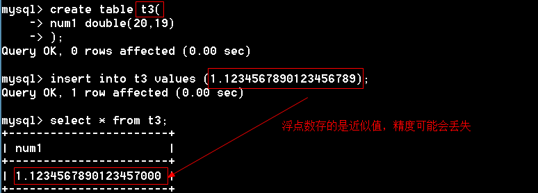
2.2.3 定点数
语法：decimal(M,D)
xxxxxxxxxxmysql> create table t4( -> num decimal(20,19) -> );Query OK, 0 rows affected (0.00 sec)mysql> insert into t4 values (1.1234567890123456789);Query OK, 1 row affected (0.01 sec)mysql> select * from t4;+-----------------------+| num |+-----------------------+| 1.1234567890123456789 |+-----------------------+1 row in set (0.00 sec)xxxxxxxxxx多学一招：1、定点数是变长的，大致每9个数字用4个字节来存储。定点数之所以能保存精确的小数，因为整数和小数是分开存储的。占用的资源比浮点数要多。2、定点数和浮点数都支持显示宽度和无符号数。2.3 数据类型——字符型
| 数据类型 | 描述 | 长度 |
|---|---|---|
| char(长度) | 定长 | 最大255 |
| varchar(长度) | 变长 | 最大65535 |
| tinytext | 大段文本 | 2^8^-1=255 |
| text | 大段文本 | 2^16^-1=65535 |
| mediumtext | 大段文本 | 2^24^-1 |
| longtext | 大段文本 | 2^32^-1 |
1、char(10)和varchar(10)的区别？
答：相同点：它们最多只能保存10个字符；
xxxxxxxxxx不同点：char不回收多余的字符，varchar会回收多余的字符。char效率高，浪费空间，varchar节省空间，效率比char低。
2、char的最大长度是255。
3、varchar理论长度是65535字节,实际根本达不到。具体长度与字符编码有关。

4、一个记录的总长度不能超过65535个字节。
5、大块文本（text）不计算在总长度中,一个大块文本只占用10个字节来保存文本的地址。
2.4 数据类型——枚举（enum）
1、从集合中选择一个数据（单选）
xxxxxxxxxxmysql> create table t8( -> name varchar(20), -> sex enum('男','女','保密') # 枚举 -> )charset=utf8;Query OK, 0 rows affected (0.06 sec)mysql> insert into t8 values ('tom','男');Query OK, 1 row affected (0.00 sec)mysql> insert into t8 values ('berry','女');Query OK, 1 row affected (0.05 sec)mysql> insert into t8 values ('rose','未知'); # 报错，只能插入枚举值ERROR 1265 (01000): Data truncated for column 'sex' at row 1mysql> select * from t8;+-------+------+| name | sex |+-------+------+| tom | 男 || berry | 女 |+-------+------+2、MySQL的枚举类型是通过整数来管理的，第一个值是1，第二个值是2，以此类推。
xxxxxxxxxxmysql> select sex+0 from t8;+-------+| sex+0 |+-------+| 1 || 2 |+-------+3、既然枚举在数据库内部存储的是整数，那么可以直接插入数字
xxxxxxxxxxmysql> insert into t8 values ('rose',3); # 可以直接插入数字Query OK, 1 row affected (0.00 sec)mysql> select * from t8;+-------+------+| name | sex |+-------+------+| tom | 男 || berry | 女 || rose | 保密 |+-------+------+3 rows in set (0.00 sec)枚举的优点：
1、 运行速度快（数字比字符串运算速度快）
2、 限制数据，保证数据完整性
3、 节省空间
xxxxxxxxxx思考：已知枚举占用2个字节，请问最多有多少个枚举值？答：2个字节=16位，可以保存数字（0-65535），枚举是从1开始，所以枚举最多可以有65535个枚举值。
2.5 数据类型——集合（set）
从集合中选择一些数据（多选）
xxxxxxxxxxmysql> create table t9( -> hobby set('爬山','读书','游泳','敲代码') -> );Query OK, 0 rows affected (0.08 sec)mysql> insert into t9 values ('爬山');Query OK, 1 row affected (0.00 sec)mysql> insert into t9 values ('爬山,游泳');Query OK, 1 row affected (0.00 sec)mysql> insert into t9 values ('游泳,爬山'); # 插入顺序不一样，但是显示的顺序是一样的Query OK, 1 row affected (0.02 sec)mysql> insert into t9 values ('爬山,游泳,开车'); # 报错，插入集合中没有的选项会报错ERROR 1265 (01000): Data truncated for column 'hobby' at row 1每个集合的元素都分配一个固定的数字，分配的方式从左往右按2的0、1、2、…次方
xxxxxxxxxx思考：已知集合占用8个字节，最多可以表示几个选项？答：8个字节=64位，一个位表示1个选项，最多可以表示64个选项。
2.6 数据类型——日期类型
| 数据类型 | 描述 |
|---|---|
| datetime | 日期时间，占用8个字节 |
| date | 日期 占用3个字节 |
| time | 时间 占用3个字节 |
| timestamp | 时间戳，占用4个字节 |
| year | 年份 占用1个字节 |
1、datetime 格式：年-月-日 小时:分钟:秒
xxxxxxxxxxmysql> create table t10( -> field datetime -> );Query OK, 0 rows affected (0.02 sec)mysql> insert into t10 values ('2025-10-12 10:12:36');Query OK, 1 row affected (0.00 sec)mysql> insert into t10 values ('100-10-12 10:12:36');Query OK, 1 row affected (0.00 sec)mysql> insert into t10 values ('10000-10-12 10:12:36'); #datetime保存范围是：1~9999年ERROR 1292 (22007): Incorrect datetime value: '10000-10-12 10:12:36' for column 'field' at row 1mysql> select * from t10;+---------------------+| field |+---------------------+| 2025-10-12 10:12:36 || 0100-10-12 10:12:36 |+---------------------+2 rows in set (0.00 sec)2、date 日期格式
xxxxxxxxxxmysql> create table t11( -> field date -> );Query OK, 0 rows affected (0.00 sec)mysql> insert into t11 values ('2025-10-12');Query OK, 1 row affected (0.00 sec)mysql> select * from t11;+------------+| field |+------------+| 2025-10-12 |+------------+3、timestamp：时间戳
timestamp类型和 datetime类型在表现上是一样的。他们的区别： datetime是从1到9999，而timestamp从1970年~2038年，2038年01月19日11:14:07秒以后就超出timestamp范围了。
xxxxxxxxxxmysql> create table t12( -> field timestamp -> );Query OK, 0 rows affected (0.00 sec)mysql> insert into t12 values ('1975-5-5 12:12:12');Query OK, 1 row affected (0.00 sec)mysql> insert into t12 values ('1969-5-5 12:12:12'); # 超出范围ERROR 1292 (22007): Incorrect datetime value: '1969-5-5 12:12:12' for column 'field' at row 1mysql> insert into t12 values ('2038-1-19 11:14:07');Query OK, 1 row affected (0.00 sec)mysql> insert into t12 values ('2038-1-19 11:14:08'); # 超出范围ERROR 1292 (22007): Incorrect datetime value: '2038-1-19 11:14:08' for column 'field' at row 1mysql> select * from t12;+---------------------+| field |+---------------------+| 1975-05-05 12:12:12 || 2038-01-19 11:14:07 |+---------------------+4、year
因为只占用1个字节，最多只能表示255个年份，范围是1901-2155之间的年份
xxxxxxxxxxmysql> create table t13( -> field year -> );Query OK, 0 rows affected (0.06 sec)mysql> insert into t13 values (2025);Query OK, 1 row affected (0.00 sec)mysql> insert into t13 values (1900); # 超出范围ERROR 1264 (22003): Out of range value for column 'field' at row 1mysql> insert into t13 values (2155);Query OK, 1 row affected (0.00 sec)mysql> insert into t13 values (2156); # 超出范围ERROR 1264 (22003): Out of range value for column 'field' at row 15、time 表示时间或时间间隔，范围是-838:59:59~838:59:59
xxxxxxxxxxmysql> create table t14( -> field time -> );Query OK, 0 rows affected (0.00 sec)mysql> insert into t14 values ('12:12:12');Query OK, 1 row affected (0.00 sec)mysql> insert into t14 values ('212:12:12');Query OK, 1 row affected (0.00 sec)mysql> insert into t14 values ('838:59:59');Query OK, 1 row affected (0.00 sec)mysql> insert into t14 values ('839:00:00'); # 操作范围ERROR 1292 (22007): Incorrect time value: '839:00:00' for column 'field' at row 1mysql>多学一招：time支持以天的方式插入
xxxxxxxxxxmysql> insert into t14 values ('10 10:10:10');Query OK, 1 row affected (0.02 sec)mysql> select * from t14;+-----------+| field |+-----------+| 12:12:12 || 212:12:12 || 838:59:59 || 250:10:10 |+-----------+2.7 数据类型——boolean
MySQL不支持boolean类型，true和false在数据库中对应1和0。
xxxxxxxxxxmysql> create table t15( -> field boolean -> );Query OK, 0 rows affected (0.00 sec)mysql> insert into t15 values (true),(false); # true和false在数据库中对应1和0Query OK, 2 rows affected (0.00 sec)Records: 2 Duplicates: 0 Warnings: 0mysql> select * from t15;+-------+| field |+-------+| 1 || 0 |+-------+2 rows in set (0.00 sec)2.8 关于数据类型的思考题
- 手机号码一般使用什么数据类型存储? char
- 电话号码使用什么数据类型 varchar
- 性别一般使用什么数据类型存储? char enum
- 学生年龄信息一般使用什么数据类型存储? tinyint
- 照片信息一般使用什么数据类型存储? binary
- 薪水一般使用什么数据类型存储? decimal
多学一招：一个字段到底选数字还是字符，取决于有没有计算的可能，如果没有计算的可能即使是数字也要用字符类型，比如手机号、QQ号，…
2.9 列属性——是否为空(null | not null)
null：可以为空
not null：不可以为空
思考题
- 学员姓名允许为空吗? 非空
- 家庭地址允许为空吗? 非空
- 电子邮件信息允许为空吗? 可以为空
- 考试成绩允许为空吗? 可以为空
2.10 列属性——默认值（default）
1、如果一个字段没有插入值，可以默认插入一个指定的值。
2、default关键字用来插入默认值
xxxxxxxxxxmysql> create table t16( -> id int unsigned, -> addr varchar(20) not null default '地址不详' -> );Query OK, 0 rows affected (0.06 sec)mysql> insert into t16 values (1,'北京'),(2,default);Query OK, 2 rows affected (0.00 sec)Records: 2 Duplicates: 0 Warnings: 0mysql> select * from t16;+------+----------+| id | addr |+------+----------+| 1 | 北京 || 2 | 地址不详 |+------+----------+2 rows in set (0.00 sec)2.11 列属性——自动增长（auto_increment）
1、字段的值从1开始，每次递增1，特点就在字段中的数据不可能重复，适合为记录生成唯一的id
2、自动增长都是无符号整数。
3、在MySQL中，auto_increment必须是主键。但是主键不一定是自动增长的。
4、如果要给自动增长列插入数据，使用null关键字。
5、自动增长列上的数据被删除，默认情况下此记录的编号不再使用。
2.12 列属性——主键（primary key）
主键：唯一标识表中记录的一个或一组列
主键的特点：不能重复，不能为空
一个表只能有一个主键，主键可以有多个字段组成。
主键的作用：
1、 保证数据完整性
2、 加快查询速度
2.12.1 添加主键
方法一：创建表的时候添加主键
xxxxxxxxxxmysql> create table t17( -> id varchar(5) primary key, # 创建主键 -> name varchar(10) not null -> );Query OK, 0 rows affected (0.00 sec)mysql> insert into t17 values ('s2531','tom'),('s2532','berry');Query OK, 2 rows affected (0.00 sec)Records: 2 Duplicates: 0 Warnings: 0mysql> select * from t17;+-------+-------+| id | name |+-------+-------+| s2531 | tom || s2532 | berry |+-------+-------+2 rows in set (0.00 sec)# 如果插入主键相同数据会报错mysql> insert into t17 values ('s2531','tom');ERROR 1062 (23000): Duplicate entry 's2531' for key 'PRIMARY'# 主键不能插入null值mysql> insert into t17 values (null,'tom');ERROR 1048 (23000): Column 'id' cannot be null方法二：创建表的时候添加主键
xxxxxxxxxxmysql> create table t18( -> id int, -> name varchar(10), -> primary key(id) -> );Query OK, 0 rows affected (0.00 sec)mysql> desc t18;+-------+-------------+------+-----+---------+-------+| Field | Type | Null | Key | Default | Extra |+-------+-------------+------+-----+---------+-------+| id | int(11) | NO | PRI | 0 | || name | varchar(10) | YES | | NULL | |+-------+-------------+------+-----+---------+-------+2 rows in set (0.00 sec)方法三：更改表的时候添加主键
xxxxxxxxxxmysql> create table t20( -> id int, -> name varchar(10) -> );Query OK, 0 rows affected (0.00 sec)mysql> alter table t20 add primary key (id); # 更改表添加主键Query OK, 0 rows affected (0.08 sec)Records: 0 Duplicates: 0 Warnings: 0mysql> desc t20;+-------+-------------+------+-----+---------+-------+| Field | Type | Null | Key | Default | Extra |+-------+-------------+------+-----+---------+-------+| id | int(11) | NO | PRI | 0 | || name | varchar(10) | YES | | NULL | |+-------+-------------+------+-----+---------+-------+2 rows in set (0.00 sec)2.12.2 创建组合键
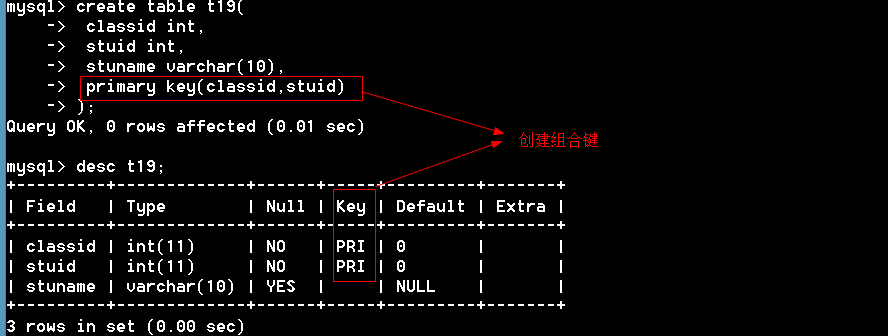
2.12.3 查看主键
2.12.3 删除主键

2.12.4 选择主键的原则
1、 最少性：尽量选择一个字段做主键
2、 稳定性：尽量选择更新少的列做主键
3、 尽量选择数字型的列做主键
2.12.5 主键思考题
1、在主键列输入的数值，允许为空吗? 不可以
2、 一个表可以有多个主键吗? 不可以
3、 在一个学校数据库中，如果一个学校内允许重名的学员，但是一个班级内不允许学员重名，可以组合班级和姓名两个字段一起来作为主键吗？ 可以
4、 标识列（自动增长列）允许为字符数据类型吗？ 不可以
5、 表中没有合适的列作为主键怎么办？ 添加自动增加列
6、 如果标识列A的初始值为1，增长量为1，则输入三行数据以后，再删除两行，下次再输入数据行的时候，标识值从多少开始？ 从4开始
2.13 列属性——唯一键
特点：
1、不能重复，可以为空
2、一个表可以有多个唯一键
作用：
1、 保证数据不能重复。保证数据完整性
2、 加快数据访问
2.13.1 添加唯一键
方法一：创建表的时候添加唯一键
xxxxxxxxxxmysql> create table t22( -> id int primary key, -> name varchar(20) unique, #通过unique添加唯一键 -> addr varchar(100) unique -> );Query OK, 0 rows affected (0.00 sec)mysql> insert into t22 values (1,'tom','上海');Query OK, 1 row affected (0.05 sec)mysql> insert into t22 values (2,'tom','北京'); # name重复了，报错ERROR 1062 (23000): Duplicate entry 'tom' for key 'name'mysql> insert into t22 values (2,'berry','上海'); # addr重复了 ERROR 1062 (23000): Duplicate entry '上海' for key 'addr'还有一种方法
xxxxxxxxxxmysql> create table t26( -> id int, -> name varchar(20), -> addr varchar(20), -> primary key(id), -> unique (name), # 添加唯一键 -> unique (addr) -> );Query OK, 0 rows affected (0.06 sec)
方法二：修改表的时候添加唯一键
xxxxxxxxxxmysql> create table t23( -> id int primary key, -> name varchar(20) -> );Query OK, 0 rows affected (0.02 sec)mysql> alter table t23 add unique (name); # 添加一个唯一键Query OK, 0 rows affected (0.02 sec)Records: 0 Duplicates: 0 Warnings: 0一次添加多个唯一键
xxxxxxxxxxmysql> create table t24( -> id int primary key, -> name varchar(20), -> addr varchar(20) -> );Query OK, 0 rows affected (0.06 sec)mysql> alter table t24 add unique(name),add unique(addr); Query OK, 0 rows affected (0.09 sec)Records: 0 Duplicates: 0 Warnings: 0添加组合唯一键
xxxxxxxxxxmysql> create table t25( -> id int primary key, -> name varchar(20), -> addr varchar(20) -> );Query OK, 0 rows affected (0.09 sec)mysql> alter table t25 add unique(name,addr);Query OK, 0 rows affected (0.01 sec)Records: 0 Duplicates: 0 Warnings: 02.13.2查看唯一键
xxxxxxxxxxmysql> show create table t26\G*************************** 1. row *************************** Table: t26Create Table: CREATE TABLE `t26` ( `id` int(11) NOT NULL DEFAULT '0', `name` varchar(20) DEFAULT NULL, `addr` varchar(20) DEFAULT NULL, PRIMARY KEY (`id`), UNIQUE KEY `name` (`name`), # 唯一键 UNIQUE KEY `addr` (`addr`) # 唯一键) ENGINE=InnoDB DEFAULT CHARSET=utf81 row in set (0.00 sec)mysql> show create table t25\G*************************** 1. row *************************** Table: t25Create Table: CREATE TABLE `t25` ( `id` int(11) NOT NULL, `name` varchar(20) DEFAULT NULL, `addr` varchar(20) DEFAULT NULL, PRIMARY KEY (`id`), UNIQUE KEY `name` (`name`,`addr`) # 组合唯一键) ENGINE=InnoDB DEFAULT CHARSET=utf81 row in set (0.00 sec)添加唯一键，给唯一键取名
xxxxxxxxxxmysql> create table t27( -> name varchar(20) -> );Query OK, 0 rows affected (0.03 sec)mysql> alter table t27 add unique UQ_name(name);Query OK, 0 rows affected (0.00 sec)Records: 0 Duplicates: 0 Warnings: 0mysql> show create table t27\G*************************** 1. row *************************** Table: t27Create Table: CREATE TABLE `t27` ( `name` varchar(20) DEFAULT NULL, UNIQUE KEY `UQ_name` (`name`) # 唯一键的名字是UQ_name) ENGINE=InnoDB DEFAULT CHARSET=utf81 row in set (0.00 sec)2.13.3 删除唯一键
通过唯一键的名字来删除唯一键
xxxxxxxxxx语法：alter table 表名 drop index 唯一键名称 
问题：主键和唯一键的区别？
1、主键不能重复，不能为空，唯一键不能重复，可以为空
2、主键只有一个，唯一键可以有多个。
2.14列属性——备注（comment）
为了程序员之间的相互交流
2.15 SQL注释
单行注释：--或#
多行注释：/* */

2.16 数据完整性介绍

2.16.1 保证实体完整性
1、 主键约束
2、 唯一约束
3、 自动增长列
2.16.2 保证域完整性
1、 数据类型约束
2、 非空约束
3、 默认值约束
2.16.3 保证引用完整性
1、外键约束：从表中的公共字段是主表的外键
2.17 引用完整性
2.17.1 主表和从表
两个表建立关系（两个表只要有公共字段就有关系），一个表称为主表，一个表称为从表。
外键约束可以实现：
1、 主表中没有的从表中不允许插入
2、 从表中有的主表中不允许删除
3、 不能更改主表中的值而导致从表中的记录孤立存在。
4、 先删除从表，再删除主表
2.17.2 外键（foreign key）
1、 外键：从表中的公共字段，公共字段的名字可以不一样，但是数据类型必须一样。
2、 外键约束用来保证引用完整性
2.17.3 添加外键
方法一：创建表的时候添加外键
xxxxxxxxxxcreate table stuinfo( stuno char(4) primary key, name varchar(10) not null);create table stumarks( stuid char(4) primary key, score tinyint unsigned, foreign key (stuid) references stuinfo(stuno));方法二：修改表的时候添加外键
xxxxxxxxxxmysql> create table stuinfo( -> stuno char(4) primary key, -> name varchar(10) not null -> );Query OK, 0 rows affected (0.00 sec)mysql> create table stumarks( -> stuid char(4) primary key, -> score tinyint unsigned -> );Query OK, 0 rows affected (0.06 sec)语法： alter table 从表 add foreign key (从表的公共字段) references 主表(公共字段)mysql> alter table stumarks add foreign key (stuid) references stuinfo(stuno);Query OK, 0 rows affected (0.06 sec)Records: 0 Duplicates: 0 Warnings: 0脚下留心：要创建外键必须是innodb引擎，myisam不支持外键约束
2.17.4 查看外键
2.17.5 删除外键
通过外键的名字删除外键
xxxxxxxxxx语法：alter table 表名 drop foreign key 外键名例题
xxxxxxxxxxmysql> alter table stumarks drop foreign key stumarks_ibfk_1;Query OK, 0 rows affected (0.02 sec)Records: 0 Duplicates: 0 Warnings: 0。
2.18 外键操作
1、 严格操作（前面讲的是严格操作）
2、 置空操作（set null）：如果主表记录删除或更新，从表置空
3、 级联操作（cascade）：如果主表记录删除或更新，从表级联
一般来说：主表删除的时候，从表置空操作，主表更新的时候，从表级联操作。
xxxxxxxxxx语法：foreign key(外键) references 主表(关键字段)[主表删除是的动作][主表更新时候的动作]例题
xxxxxxxxxxmysql> create table stuinfo( -> stuno char(4) primary key, -> name varchar(10) not null -> );Query OK, 0 rows affected (0.02 sec)mysql> create table stumarks( -> stuid int auto_increment primary key, -> stuno char(4) , -> score tinyint unsigned, -> foreign key (stuno) references stuinfo(stuno) on delete set null on update cascade -> );Query OK, 0 rows affected (0.00 sec)mysql> insert into stuinfo values ('s101','tom');Query OK, 1 row affected (0.00 sec)mysql> insert into stumarks values (null,'s101',88);Query OK, 1 row affected (0.00 sec)mysql> select * from stuinfo;+-------+------+| stuno | name |+-------+------+| s101 | tom |+-------+------+1 row in set (0.00 sec)mysql> update stuinfo set stuno='s102' where stuno='s101'; # 更新时级联Query OK, 1 row affected (0.00 sec)Rows matched: 1 Changed: 1 Warnings: 0mysql> select * from stumarks;+-------+-------+-------+| stuid | stuno | score |+-------+-------+-------+| 1 | s102 | 88 |+-------+-------+-------+1 row in set (0.00 sec)mysql> delete from stuinfo where stuno='s102'; # 删除时置空Query OK, 1 row affected (0.02 sec)mysql> select * from stumarks;+-------+-------+-------+| stuid | stuno | score |+-------+-------+-------+| 1 | NULL | 88 |+-------+-------+-------+1 row in set (0.00 sec)2.19客户端介绍
第一：命令行
第二：MySQL-Front和Navicat
MySQL-Front

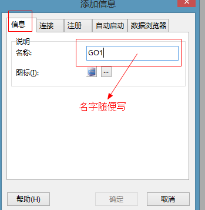

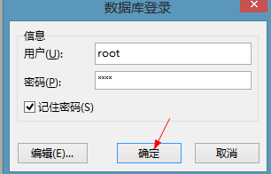
3.1 今日目标
- 理解实体之间的关系
- 理解绘制E-R图
- 理解三范式
- 理解范式和性能的关系
- 能够查询表中的数据
- 理解聚合函数
- 理解模糊查询
- 理解分组查询
3.2 数据库基本概念
1、关系：两个表的公共字段
2、行：也称记录，也称实体
3、列：也称字段，也称属性
xxxxxxxxxx就表结构而言，表分为行和列；就表数据而言，分为记录和字段；就面向对象而言，一个记录就是一个实体，一个字段就是一个属性。
4、数据冗余：相同的数据存储在不同的地方
xxxxxxxxxx脚下留心：1、冗余只能减少，不能杜绝。2、减少冗余的方法是分表3、为减少数据查找的麻烦，允许数据有一定的冗余
5、数据完整性：正确性+准确性=数据完整性
xxxxxxxxxx正确性：数据类型正确准确性：数据范围要准确
思考：学生的年龄是整型，输入1000岁，正确性和准确性如何？
答：正确的，但不准确
思考：年龄是整形的，收入了字符串，正确性和准确性如何？
答：不正确
3.3 实体和实体之间的关系
1、一对一
2、一对多 （多对一）
3、多对多 
3.3.1 一对多 1：N
1、主表中的一条记录对应从表中的多条记录。
2、一对多和多对一是一样的
如何实现一对多？
答：主键和非主键建关系
问题：说出几个一对多的关系？
答：班级表和学生表、 班主表和学生表
3.3.2 一对一（1:1）
1、主表中的一条记录对应从表中的一条记录

如何实现一对一？
主键和主键建关系就能实现一对一。
xxxxxxxxxx思考：一对一两个表完全可以用一个表实现，为什么还要分成两个表？答：在字段数量很多情况下，数据量也就很大，每次查询都需要检索大量数据，这样效率低下。我们可以将所有字段分成两个部分，“常用字段”和“不常用字段”，这样对大部分查询者来说效率提高了。【表的垂直分割】
3.3.3 多对多（N：M）
主表中的一条记录对应从表中的多条记录，从表中的一条记录对应主表中的多条记录
班级和讲师的关系

如何实现多对多？
答：建立第三张表来保存关系。
问题：说出几个多对多的关系？
1、科目表和学生表的关系 2、商品表和订单表 3、游戏目录表和玩家表
3.4 数据库设计的步骤
3.4.1 数据库设计具体步骤
1、 收集信息：与该系统有关人员进行交流、坐谈，充分理解数据库需要完成的任务
2、 标识对象（实体－Entity）标识数据库要管理的关键对象或实体
3、 标识每个实体的属性（Attribute）
4、 标识对象之间的关系（Relationship）
5、 将模型转换成数据库
6、 规范化
3.4.2 绘制E-R图
E-R（Entity－Relationship）实体关系图
E-R图的语法

绘制E-R图

3.4.3 将E-R图转成表
1、 实体转成表，属性转成字段
2、 如果没有合适的字段做主键，给表添加一个自动增长列做主键。
3.4.4 例题
1、项目需求
xxxxxxxxxxBBS论坛的基本功能：用户注册和登录，后台数据库需要存放用户的注册信息和在线状态信息；用户发贴，后台数据库需要存放贴子相关信息，如贴子内容、标题等；用户可以对发帖进行回复；论坛版块管理：后台数据库需要存放各个版块信息，如版主、版块名称、贴子数等；
2、标识对象
xxxxxxxxxx参与的对象有：用户、发的帖子、跟帖、板块
3、标识对象的属性

4、建立关系，绘制E-R图

5、将E-R图转出表结构
3.5 数据规范化
Codd博士定义了6个范式来规范化数据库，范式由小到大来约束，范式越高冗余越小，但表的个数也越多。实验证明，三范式是性价比最高的。
3.5.1 第一范式：确保每列原子性
第一范式确保每个字段不可再分
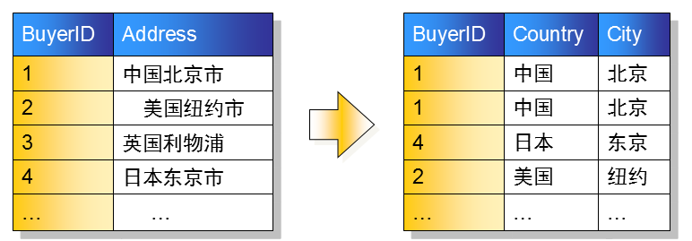
思考：如下表设计是否合理？
不合理。不满足第一范式，上课时间可以再分
思考：地址包含省、市、县、地区是否需要拆分？
答：如果仅仅起地址的作用，不需要统计，可以不拆分；如果有按地区统计的功能需要拆分。
在实际项目中，建议拆分。
3.5.2 第二范式：非键字段必须依赖于键字段
一个表只能描述一件事
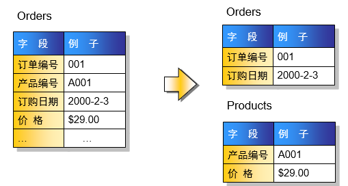
思考：如下表设计是否合理？
3.5.3 第三范式：消除传递依赖
在所有的非键字段中，不能有传递依赖

下列设计是否满足第三范式？

不满足，因为语文和数学确定了，总分就确定了。
xxxxxxxxxx多学一招：上面的设计不满足第三范式，但是高考分数表就是这样设计的，为什么？答：高考分数峰值访问量非常大，这时候就是性能更重要。当性能和规范化冲突的时候，我们首选性能。这就是“反三范式”。
3.5.4 数据库设计的例题
1、需求
xxxxxxxxxx公司承担多个工程项目，每一项工程有：工程号、工程名称、施工人员等公司有多名职工，每一名职工有：职工号、姓名、性别、职务（工程师、技术员）等公司按照工时和小时工资率支付工资，小时工资率由职工的职务决定（例如，技术员的小时工资率与工程师不同）
2、工资表
3、将工资表转成数据库表

4、这个表存在的问题
xxxxxxxxxxA：新人入职需要虚拟一个项目B：职务更改，小时工资率可能会忘记更改，造成数据不完整C：有人离职，删除记录后，工程也没有了
5、规范化表
xxxxxxxxxx第一步：这个表满足第一范式第二步：这个表不是描述了一件事情
xxxxxxxxxx第三步：是否满足第三范式
更改如下：
3.6 查询语句
xxxxxxxxxx语法：select [选项] 列名 [from 表名] [where 条件] [group by 分组] [order by 排序][having 条件] [limit 限制]3.6.1 字段表达式
xxxxxxxxxxmysql> select '锄禾日当午';+------------+| 锄禾日当午 |+------------+| 锄禾日当午 |+------------+mysql> select 10*10;+-------+| 10*10 |+-------+| 100 |+-------+通过as给字段取别名
xxxxxxxxxxmysql> select '锄禾日当午' as content;+------------+| content |+------------+| 锄禾日当午 |+------------+1 row in set (0.00 sec)mysql> select 10*10 as result;+--------+| result |+--------+| 100 |+--------+1 row in set (0.00 sec)多学一招：as可以省略
xxxxxxxxxxmysql> select 10*10 result;+--------+| result |+--------+| 100 |+--------+1 row in set (0.00 sec)3.6.2 from子句
from：来自，from后面跟的是数据源。数据源可以有多个。返回笛卡尔积。
插入测试表
xxxxxxxxxxmysql> create table t1( -> id int, -> name varchar(10) -> );Query OK, 0 rows affected (0.05 sec)mysql> create table t2( -> field1 varchar(10), -> field2 varchar(10) -> );Query OK, 0 rows affected (0.00 sec)mysql> insert into t1 values (1,'tom'),(2,'berry');Query OK, 2 rows affected (0.00 sec)Records: 2 Duplicates: 0 Warnings: 0mysql> insert into t2 values ('333','333'),('444','444');Query OK, 2 rows affected (0.02 sec)Records: 2 Duplicates: 0 Warnings: 0测试多个数据源
xxxxxxxxxxmysql> select * from t1,t2; # 返回笛卡尔积+------+-------+--------+--------+| id | name | field1 | field2 |+------+-------+--------+--------+| 1 | tom | 333 | 333 || 2 | berry | 333 | 333 || 1 | tom | 444 | 444 || 2 | berry | 444 | 444 |+------+-------+--------+--------+4 rows in set (0.00 sec)3.6.3 dual表
dual表是一个伪表。在有些特定情况下，没有具体的表的参与，但是为了保证select语句的完整又必须要一个表名，这时候就使用伪表。
xxxxxxxxxxmysql> select 10*10 as result from dual; #dual表是用来保证select语句的完整性。+--------+| result |+--------+| 100 |+--------+3.6.4 where子句
where后面跟的是条件，在数据源中进行筛选。返回条件为真记录
MySQL支持的运算符
>大于<小于>=<==!=- and 与
- or 或
- not 非
xxxxxxxxxxmysql> select * from stu where stusex='男'; # 查找性别是男的记录mysql> select * from stu where stuage>=20; # 查找年龄不低于20的记录思考：如下代码输出什么
xxxxxxxxxxselect * from stu where 1 # 返回所有数据库select * from stu where 0 #返回空记录思考：如何查找北京和上海的学生
xxxxxxxxxxmysql> select * from stu where stuaddress='上海' or stuaddress='北京';+--------+---------+--------+--------+---------+------------+------+------+| stuNo | stuName | stuSex | stuAge | stuSeat | stuAddress | ch | math |+--------+---------+--------+--------+---------+------------+------+------+| s25301 | 张秋丽 | 男 | 18 | 1 | 北京 | 80 | NULL || s25302 | 李文才 | 男 | 31 | 3 | 上海 | 77 | 76 || s25303 | 李斯文 | 女 | 22 | 2 | 北京 | 55 | 82 || s25320 | Tom | 男 | 24 | 8 | 北京 | 65 | 67 |+--------+---------+--------+--------+---------+------------+------+------+3.6.5 in | not in
上面的查询上海和北京的学生的SQL可以通过in语句来实现
xxxxxxxxxxmysql> select * from stu where stuaddress in ('北京','上海');练习：
1、查找学号是s25301,s25302,s25303的学生
xxxxxxxxxxmysql> select * from stu where stuno in ('s25301','s25302','s25303');2、查找年龄是18,19,20的学生
xxxxxxxxxxmysql> select * from stu where stuage in(18,19,20);3、查找不是北京和上海的学生
xxxxxxxxxxmysql> select * from stu where stuaddress not in ('北京','上海');3.6.6 between…and|not between…and
查找某个范围的记录
1、查找年龄在18~20之间的学生
xxxxxxxxxxmysql> select * from stu where stuage>=18 and stuage<=20; # 方法一mysql> select * from stu where stuage between 18 and 20; # 方法二2、查找年龄不在18~20之间的学生
xxxxxxxxxxmysql> select * from stu where stuage<18 or stuage>20; #方法一mysql> select * from stu where not (stuage>=18 and stuage<=20);mysql> select * from stu where stuage not between 18 and 20;3.6.7 is null | is not null
脚下留心：查询一个为空的字段不能用等于，必须用is null
查找缺考的学生
xxxxxxxxxxmysql> select * from stu where ch is null or math is null; # 查找缺考的人+--------+----------+--------+--------+---------+------------+------+------+| stuNo | stuName | stuSex | stuAge | stuSeat | stuAddress | ch | math |+--------+----------+--------+--------+---------+------------+------+------+| s25301 | 张秋丽 | 男 | 18 | 1 | 北京 | 80 | NULL || s25304 | 欧阳俊雄 | 男 | 28 | 4 | 天津 | NULL | 74 |+--------+----------+--------+--------+---------+------------+------+------+查找参加考试的学生
xxxxxxxxxxmysql> select * from stu where ch is not null and math is not null;3.6.8 聚合函数
- sum() 求和
- avg() 求平均值
- max() 求最大值
- min() 求最小值
- count() 求记录数
xxxxxxxxxx#求语文总分、语文平均分、语文最高分、语文最低分、总人数mysql> select sum(ch) '语文总分',avg(ch) '语文平均分', max(ch) '语文最高分',min(ch) '语文最低分',count(*) '总人数' from stu;+----------+------------+------------+------------+--------+| 语文总分 | 语文平均分 | 语文最高分 | 语文最低分 | 总人数 |+----------+------------+------------+------------+--------+| 597 | 74.6250 | 88 | 55 | 9 |+----------+------------+------------+------------+--------+1 row in set (0.00 sec)3.6.9 通配符
- _ [下划线] 表示任意一个字符
- % 表示任意字符
练习
1、满足“T_m”的有（A、C）
A：Tom B：Toom C：Tam D：Tm E：Tmo
2、满足“T_m_”的有（B、C ）
A:Tmom B:Tmmm C:T1m2 D:Tmm E:Tm
3、满足“张%”的是（A、B、C、D）
A:张三 B：张三丰 C：张牙舞爪 D：张 E：小张
4、满足“%诺基亚%”的是（A、B、C、D）
A：诺基亚2100 B：2100诺基亚 C：把我的诺基亚拿过来 D：诺基亚
16.10 模糊查询（like）
xxxxxxxxxx# 查找姓张的同学mysql> select * from stu where stuname like '张%';+--------+---------+--------+--------+---------+------------+------+------+| stuNo | stuName | stuSex | stuAge | stuSeat | stuAddress | ch | math |+--------+---------+--------+--------+---------+------------+------+------+| s25301 | 张秋丽 | 男 | 18 | 1 | 北京 | 80 | NULL |+--------+---------+--------+--------+---------+------------+------+------+1 row in set (0.00 sec)#例题mysql> select * from stu where stuname like 'T_m';+--------+---------+--------+--------+---------+------------+------+------+| stuNo | stuName | stuSex | stuAge | stuSeat | stuAddress | ch | math |+--------+---------+--------+--------+---------+------------+------+------+| s25320 | Tom | 男 | 24 | 8 | 北京 | 65 | 67 |+--------+---------+--------+--------+---------+------------+------+------+1 row in set (0.00 sec)3.6.11 order by排序
asc：升序【默认】
desc：降序
xxxxxxxxxxmysql> select * from stu order by ch desc; # 语文成绩降序排列mysql> select * from stu order by math asc; # 数学成绩升序排列mysql> select * from stu order by math; # 默认升序排列多列排序
xxxxxxxxxx#年龄升序,成绩降序mysql> select *,(ch+math) as '总分' from stu order by stuage asc,(ch+math) desc;思考如下代码表示什么含义
xxxxxxxxxxselect * from stu order by stuage desc,ch desc; #年龄降序，语文降序select * from stu order by stuage desc,ch asc; #年龄降序，语文升序select * from stu order by stuage,ch desc; #年龄升序、语文降序select * from stu order by stuage,ch; #年龄升序、语文升序3.6.12 group by 【分组查询】
将查询的结果分组，分组查询目的在于统计数据。
xxxxxxxxxx# 按性别分组，显示每组的平均年龄mysql> select avg(stuage) as '年龄',stusex from stu group by stusex;+---------+--------+| 年龄 | stusex |+---------+--------+| 22.7500 | 女 || 25.4000 | 男 |+---------+--------+2 rows in set (0.00 sec)# 按地区分组，每个地区的平均年龄mysql> select avg(stuage) as '年龄',stuaddress from stu group by stuaddress;+---------+------------+| 年龄 | stuaddress |+---------+------------+| 31.0000 | 上海 || 21.3333 | 北京 || 27.0000 | 天津 || 23.0000 | 河北 || 23.0000 | 河南 |+---------+------------+5 rows in set (0.00 sec)xxxxxxxxxx脚下留心：1、如果是分组查询，查询字段必须是分组字段和聚合函数。2、查询字段是普通字段，只取第一个值

通过group_concat()函数将同一组的值连接起来显示
xxxxxxxxxxmysql> select group_concat(stuname),stusex from stu group by stusex;+-------------------------------------+--------+| group_concat(stuname) | stusex |+-------------------------------------+--------+| 李斯文,诸葛丽丽,梅超风,Tabm | 女 || 张秋丽,李文才,欧阳俊雄,争青小子,Tom | 男 |+-------------------------------------+--------+2 rows in set (0.00 sec)xxxxxxxxxx多学一招：【了解】1、分组后的结果默认会按升序排列显示2、也是可以使用desc实现分组后的降序
多列分组
xxxxxxxxxxmysql> select stuaddress,stusex,avg(stuage) from stu group by stuaddress,stusex;+------------+--------+-------------+| stuaddress | stusex | avg(stuage) |+------------+--------+-------------+| 上海 | 男 | 31.0000 || 北京 | 女 | 22.0000 || 北京 | 男 | 21.0000 || 天津 | 男 | 27.0000 || 河北 | 女 | 23.0000 || 河南 | 女 | 23.0000 |+------------+--------+-------------+6 rows in set (0.00 sec)3.6.13 having条件
xxxxxxxxxx思考：数据库中的表是一个二维表，返回的结果是一张二维表，既然能在数据库的二维表中进行查询，能否在结果集的二维表上继续进行查询？答：可以，having条件就是在结果集上继续进行筛选。
例题
xxxxxxxxxxmysql> select * from stu where stusex='男'; # 从数据库中查找+--------+----------+--------+--------+---------+------------+------+------+| stuNo | stuName | stuSex | stuAge | stuSeat | stuAddress | ch | math |+--------+----------+--------+--------+---------+------------+------+------+| s25301 | 张秋丽 | 男 | 18 | 1 | 北京 | 80 | NULL || s25302 | 李文才 | 男 | 31 | 3 | 上海 | 77 | 76 || s25304 | 欧阳俊雄 | 男 | 28 | 4 | 天津 | NULL | 74 || s25318 | 争青小子 | 男 | 26 | 6 | 天津 | 86 | 92 || s25320 | Tom | 男 | 24 | 8 | 北京 | 65 | 67 |+--------+----------+--------+--------+---------+------------+------+------+5 rows in set (0.00 sec)mysql> select * from stu having stusex='男'; # 从结果集中查找+--------+----------+--------+--------+---------+------------+------+------+| stuNo | stuName | stuSex | stuAge | stuSeat | stuAddress | ch | math |+--------+----------+--------+--------+---------+------------+------+------+| s25301 | 张秋丽 | 男 | 18 | 1 | 北京 | 80 | NULL || s25302 | 李文才 | 男 | 31 | 3 | 上海 | 77 | 76 || s25304 | 欧阳俊雄 | 男 | 28 | 4 | 天津 | NULL | 74 || s25318 | 争青小子 | 男 | 26 | 6 | 天津 | 86 | 92 || s25320 | Tom | 男 | 24 | 8 | 北京 | 65 | 67 |+--------+----------+--------+--------+---------+------------+------+------+5 rows in set (0.00 sec)思考如下语句是否正确 
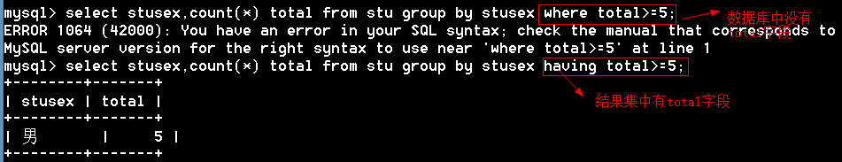
having和where的区别：
where是对原始数据进行筛选，having是对记录集进行筛选。
3.6.14 limit
语法：limit 起始位置，显示长度
xxxxxxxxxxmysql> select * from stu limit 0,2; # 从0的位置开始，取两条数据+--------+---------+--------+--------+---------+------------+------+------+| stuNo | stuName | stuSex | stuAge | stuSeat | stuAddress | ch | math |+--------+---------+--------+--------+---------+------------+------+------+| s25301 | 张秋丽 | 男 | 18 | 1 | 北京 | 80 | NULL || s25302 | 李文才 | 男 | 31 | 3 | 上海 | 77 | 76 |+--------+---------+--------+--------+---------+------------+------+------+2 rows in set (0.00 sec) mysql> select * from stu limit 2,2; # 从2的位置开始，取两条数据+--------+----------+--------+--------+---------+------------+------+------+| stuNo | stuName | stuSex | stuAge | stuSeat | stuAddress | ch | math |+--------+----------+--------+--------+---------+------------+------+------+| s25303 | 李斯文 | 女 | 22 | 2 | 北京 | 55 | 82 || s25304 | 欧阳俊雄 | 男 | 28 | 4 | 天津 | NULL | 74 |+--------+----------+--------+--------+---------+------------+------+------+起始位置可以省略，默认是从0开始
xxxxxxxxxxmysql> select * from stu limit 2;+--------+---------+--------+--------+---------+------------+------+------+| stuNo | stuName | stuSex | stuAge | stuSeat | stuAddress | ch | math |+--------+---------+--------+--------+---------+------------+------+------+| s25301 | 张秋丽 | 男 | 18 | 1 | 北京 | 80 | NULL || s25302 | 李文才 | 男 | 31 | 3 | 上海 | 77 | 76 |+--------+---------+--------+--------+---------+------------+------+------+2 rows in set (0.00 sec)例题：找出班级总分前三名
xxxxxxxxxxmysql> select *,(ch+math) total from stu order by total desc limit 0,3;+--------+----------+--------+--------+---------+------------+------+------+-------+| stuNo | stuName | stuSex | stuAge | stuSeat | stuAddress | ch | math | total |+--------+----------+--------+--------+---------+------------+------+------+-------+| s25318 | 争青小子 | 男 | 26 | 6 | 天津 | 86 | 92 | 178 || s25321 | Tabm | 女 | 23 | 9 | 河北 | 88 | 77 | 165 || s25302 | 李文才 | 男 | 31 | 3 | 上海 | 77 | 76 | 153 |+--------+----------+--------+--------+---------+------------+------+------+-------+多学一招：limit在update和delete语句中也是可以使用的。
3.6.15 查询语句中的选项
查询语句中的选项有两个：
1、 all：显示所有数据 【默认】
2、 distinct：去除结果集中重复的数据
xxxxxxxxxxmysql> select distinct stuaddress from stu;+------------+| stuaddress |+------------+| 上海 || 天津 || 河南 || 河北 || 北京 |+------------+5 rows in set (0.00 sec)3.7 union（联合）
插入测试数据
xxxxxxxxxxmysql> create table GO1( -> id int primary key, -> name varchar(20));Query OK, 0 rows affected (0.06 sec)mysql> insert into Go1 values (1,'李白'),(2,'张秋丽');Query OK, 2 rows affected (0.02 sec)Records: 2 Duplicates: 0 Warnings: 03.7.1 union的使用
作用：将多个select语句结果集纵向联合起来
xxxxxxxxxx语法：select 语句 union [选项] select 语句 union [选项] select 语句xxxxxxxxxxmysql> select stuno,stuname from stu union select id,name from Go1;+--------+----------+| stuno | stuname |+--------+----------+| s25301 | 张秋丽 || s25302 | 李文才 || s25303 | 李斯文 || s25304 | 欧阳俊雄 || s25305 | 诸葛丽丽 || s25318 | 争青小子 || s25319 | 梅超风 || s25320 | Tom || s25321 | Tabm || 1 | 李白 || 2 | 张秋丽 |+--------+----------+例题：查询上海的男生和北京的女生
xxxxxxxxxxmysql> select stuname,stuaddress,stusex from stu where (stuaddress='上海' and stusex='男') or (stuaddress='北京' and stusex='女');+---------+------------+--------+| stuname | stuaddress | stusex |+---------+------------+--------+| 张秋丽 | 上海 | 男 || 梅超风 | 北京 | 女 |+---------+------------+--------+2 rows in set (0.00 sec)mysql> select stuname,stuaddress,stusex from stu where stuaddress='上海' and stusex='男' union select stuname,stuaddress,stusex from stu where stuaddress='北京' and stusex='女';+---------+------------+--------+| stuname | stuaddress | stusex |+---------+------------+--------+| 张秋丽 | 上海 | 男 || 梅超风 | 北京 | 女 |+---------+------------+--------+2 rows in set (0.02 sec)3.7.2 union的选项
union的选项有两个
1、 all：显示所有数据
2、 distinct：去除重复的数据【默认】
xxxxxxxxxxmysql> select name from go1 union select stuname from stu;+----------+| name |+----------+| 李白 || 张秋丽 || 李文才 || 李斯文 || 欧阳俊雄 || 诸葛丽丽 || 争青小子 || 梅超风 || Tom || Tabm |+----------+默认是去重复的
xxxxxxxxxxmysql> select name from go1 union all select stuname from stu; # all不去重复记录+----------+| name |+----------+| 李白 || 张秋丽 || 张秋丽 || 李文才 || 李斯文 || 欧阳俊雄 || 诸葛丽丽 || 争青小子 || 梅超风 || Tom || Tabm |+----------+3.7.3 union的注意事项
1、 union两边的select语句的字段个数必须一致
2、 union两边的select语句的字段名可以不一致，最终按第一个select语句的字段名。
3、 union两边的select语句中的数据类型可以不一致。
4.1 今日目标
- 理解多表查询
- 理解子查询
- 能够创建视图
- 能够删除视图
- 能够查看创建视图的SQL语句
- 能够理解事务的作用
- 能够操作事务
- 理解索引的作用
- 能够创建索引
- 能够删除索引
- 知道常用的函数
- 了解预处理语句的作用
- 能够使用预处理语句
- 了解存储过程的作用
- 能够创建存储过程
- 能够调用存储过程
- 能够通过Go语言连接MySQL数据库
- 能够通过Go语言对MySQL进行增、删、改、查的操作
4.2 多表查询分类
将多个表的数据横向的联合起来。 1、 内连接 2、 外连接 a) 左外连接 b) 右外连接 3、 交叉连接 4、 自然连接
4.2.1 内连接【inner join】
xxxxxxxxxx语法一：select 列名 from 表1 inner join 表2 on 表1.公共字段=表2.公共字段语法二：select 列名 from 表1,表2 where 表1.公共字段=表2.公共字段
例题
xxxxxxxxxx方法一：mysql> select stuname,stusex,writtenexam,labexam from stuinfo inner join stumarks on stuinfo.stuno=stumarks.stuno;+----------+--------+-------------+---------+| stuname | stusex | writtenexam | labexam |+----------+--------+-------------+---------+| 李斯文 | 女 | 80 | 58 || 李文才 | 男 | 50 | 90 || 欧阳俊雄 | 男 | 65 | 50 || 张秋丽 | 男 | 77 | 82 || 争青小子 | 男 | 56 | 48 |+----------+--------+-------------+---------+方法二：mysql> select stuinfo.stuno,stuname,stusex,writtenexam,labexam from stuinfo,stumarks where stuinfo.stuno=stumarks.stuno;+--------+----------+--------+-------------+---------+| stuno | stuname | stusex | writtenexam | labexam |+--------+----------+--------+-------------+---------+| s25303 | 李斯文 | 女 | 80 | 58 || s25302 | 李文才 | 男 | 50 | 90 || s25304 | 欧阳俊雄 | 男 | 65 | 50 || s25301 | 张秋丽 | 男 | 77 | 82 || s25318 | 争青小子 | 男 | 56 | 48 |+--------+----------+--------+-------------+---------+可以给表取别名mysql> select i.stuno,stuname,stusex,writtenexam,labexam from stuinfo i,stumarks s where i.stuno=s.stuno;+--------+----------+--------+-------------+---------+| stuno | stuname | stusex | writtenexam | labexam |+--------+----------+--------+-------------+---------+| s25303 | 李斯文 | 女 | 80 | 58 || s25302 | 李文才 | 男 | 50 | 90 || s25304 | 欧阳俊雄 | 男 | 65 | 50 || s25301 | 张秋丽 | 男 | 77 | 82 || s25318 | 争青小子 | 男 | 56 | 48 |+--------+----------+--------+-------------+---------+5 rows in set (0.00 sec)
脚下留心：显示公共字段需要指定表名 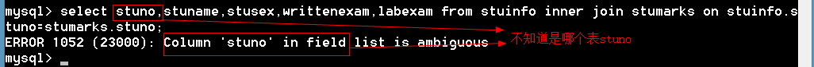

xxxxxxxxxx思考：select * from 表1 inner join 表2 on 表1.公共字段=表2.公共字段 和select * from 表2 inner join 表1 on 表1.公共字段=表2.公共字段 结果是否一样？答：一样的，因为内连接获取的是两个表的公共部分
xxxxxxxxxx多学一招：三个表的内连接如何实现？select * from 表1 inner join 表2 on 表1.公共字段=表2.公共字段inner join 表3 on 表2.公共字段=表3.公共字段
4.2.2 左外连接【left join】
以左边的表为标准，如果右边的表没有对应的记录，用NULL填充。
xxxxxxxxxx语法：select 列名 from 表1 left join 表2 on 表1.公共字段=表2.公共字段
例题
xxxxxxxxxxmysql> select stuname,writtenexam,labexam from stuinfo left join stumarks on stuinfo.stuno=stumarks.stuno;+----------+-------------+---------+| stuname | writtenexam | labexam |+----------+-------------+---------+| 张秋丽 | 77 | 82 || 李文才 | 50 | 90 || 李斯文 | 80 | 58 || 欧阳俊雄 | 65 | 50 || 诸葛丽丽 | NULL | NULL || 争青小子 | 56 | 48 || 梅超风 | NULL | NULL |+----------+-------------+---------+xxxxxxxxxx思考：select * from 表1 left join 表2 on 表1.公共字段=表2.公共字段和select * from 表2 left join 表1 on 表1.公共字段=表2.公共字段 是否一样？答：不一样，左连接一左边的表为准。
4.2.3 右外连接【right join】
以右边的表为标准，如果左边的表没有对应的记录，用NULL填充。
xxxxxxxxxx语法：select 列名 from 表1 right join 表2 on 表1.公共字段=表2.公共字段
例题
xxxxxxxxxxmysql> select stuname,writtenexam,labexam from stuinfo right join stumarks on stuinfo.stuno=stumarks.stuno;+----------+-------------+---------+| stuname | writtenexam | labexam |+----------+-------------+---------+| 李斯文 | 80 | 58 || 李文才 | 50 | 90 || 欧阳俊雄 | 65 | 50 || 张秋丽 | 77 | 82 || 争青小子 | 56 | 48 || NULL | 66 | 77 |+----------+-------------+---------+6 rows in set (0.00 sec)xxxxxxxxxx思考：select * from 表1 left join 表2 on 表1.公共字段=表2.公共字段和select * from 表2 right join 表1 on 表1.公共字段=表2.公共字段 是否一样？答：一样的
4.2.4 交叉连接【cross join】
插入测试数据
xxxxxxxxxxmysql> create table t1( -> id int, -> name varchar(10) -> );Query OK, 0 rows affected (0.06 sec)mysql> insert into t1 values (1,'tom'),(2,'berry');Query OK, 2 rows affected (0.00 sec)mysql> create table t2( -> id int, -> score int);Query OK, 0 rows affected (0.02 sec)mysql> insert into t2 values (1,88),(2,99);1、如果没有连接表达式返回的是笛卡尔积
xxxxxxxxxxmysql> select * from t1 cross join t2; # 返回笛卡尔积+------+-------+------+-------+| id | name | id | score |+------+-------+------+-------+| 1 | tom | 1 | 88 || 2 | berry | 1 | 88 || 1 | tom | 2 | 99 || 2 | berry | 2 | 99 |+------+-------+------+-------+2、如果有连接表达式等价于内连接
xxxxxxxxxxmysql> select * from t1 cross join t2 where t1.id=t2.id;+------+-------+------+-------+| id | name | id | score |+------+-------+------+-------+| 1 | tom | 1 | 88 || 2 | berry | 2 | 99 |+------+-------+------+-------+4.2.5 自然连接【natural】
xxxxxxxxxx自动的判断连接条件，它是过同名字段来判断的
自然连接又分为：
- 自然内连接 natural join
- 自然左外连接 natural left join
- 自然右外连接 natural right join
例题：
xxxxxxxxxx# 自然内连接mysql> select * from stuinfo natural join stumarks;+--------+----------+--------+--------+---------+------------+---------+-------------+---------+| stuNo | stuName | stuSex | stuAge | stuSeat | stuAddress | examNo | writtenExam | labExam |+--------+----------+--------+--------+---------+------------+---------+-------------+---------+| s25303 | 李斯文 | 女 | 22 | 2 | 北京 | s271811 | 80 | 58 || s25302 | 李文才 | 男 | 31 | 3 | 上海 | s271813 | 50 | 90 || s25304 | 欧阳俊雄 | 男 | 28 | 4 | 天津 | s271815 | 65 | 50 || s25301 | 张秋丽 | 男 | 18 | 1 | 北京 | s271816 | 77 | 82 || s25318 | 争青小子 | 男 | 26 | 6 | 天津 | s271819 | 56 | 48 |+--------+----------+--------+--------+---------+------------+---------+-------------+---------+5 rows in set (0.00 sec)# 自然左外连接mysql> select * from stuinfo natural left join stumarks;+--------+----------+--------+--------+---------+------------+---------+-------------+---------+| stuNo | stuName | stuSex | stuAge | stuSeat | stuAddress | examNo | writtenExam | labExam |+--------+----------+--------+--------+---------+------------+---------+-------------+---------+| s25301 | 张秋丽 | 男 | 18 | 1 | 北京 | s271816 | 77 82 || s25302 | 李文才 | 男 | 31 | 3 | 上海 | s271813 | 50 | 90 || s25303 | 李斯文 | 女 | 22 | 2 | 北京 | s271811 | 80 | 58 || s25304 | 欧阳俊雄 | 男 | 28 | 4 | 天津 | s271815 | 65 50 || s25305 | 诸葛丽丽 | 女 | 23 | 7 | 河南 | NULL | NULL NULL || s25318 | 争青小子 | 男 | 26 | 6 | 天津 | s271819 | 56 48 || s25319 | 梅超风 | 女 | 23 | 5 | 河北 | NULL | NULL |ULL |+--------+----------+--------+--------+---------+------------+---------+-------------+---------+7 rows in set (0.00 sec)# 自然右外连接mysql> select * from stuinfo natural right join stumarks;+--------+---------+-------------+---------+----------+--------+--------+---------+------------+| stuNo | examNo | writtenExam | labExam | stuName | stuSex | stuAge | stuSeat | stuAddress |+--------+---------+-------------+---------+----------+--------+--------+---------+------------+| s25303 | s271811 | 80 | 58 | 李斯文 | 女 | 22 | 2 | 北京 || s25302 | s271813 | 50 | 90 | 李文才 | 男 | 31 | 3 | 上海 || s25304 | s271815 | 65 | 50 | 欧阳俊雄 | 男 | 28 | 4 | 天津 || s25301 | s271816 | 77 | 82 | 张秋丽 | 男 | 18 | 1 | 北京 || s25318 | s271819 | 56 | 48 | 争青小子 | 男 | 26 | 6 | 天津 || s25320 | s271820 | 66 | 77 | NULL | NULL | NULL | NULL | NULL |+--------+---------+-------------+---------+----------+--------+--------+---------+------------+6 rows in set (0.00 sec)自然连接结论：
表连接通过同名的字段来连接的
如果没有同名的字段返回笛卡尔积
会对结果进行整理，整理的规则如下
a) 连接字段保留一个
b) 连接字段放在最前面
c) 左外连接左边在前，右外连接右表在前
4.2.6 using()
- 用来指定连接字段。
- using()也会对连接字段进行整理，整理方式和自然连接是一样的。
xxxxxxxxxxmysql> select * from stuinfo inner join stumarks using(stuno); # using指定字段+--------+----------+--------+--------+---------+------------+---------+-------------+---------+| stuNo | stuName | stuSex | stuAge | stuSeat | stuAddress | examNo | writtenExam | labExam |+--------+----------+--------+--------+---------+------------+---------+-------------+---------+| s25303 | 李斯文 | 女 | 22 | 2 | 北京 | s271811 | 80 | 58 || s25302 | 李文才 | 男 | 31 | 3 | 上海 | s271813 | 50 | 90 || s25304 | 欧阳俊雄 | 男 | 28 | 4 | 天津 | s271815 | 65 | 50 || s25301 | 张秋丽 | 男 | 18 | 1 | 北京 | s271816 | 77 | 82 || s25318 | 争青小子 | 男 | 26 | 6 | 天津 | s271819 | 56 | 48 |+--------+----------+--------+--------+---------+------------+---------+-------------+---------+5 rows in set (0.00 sec)4.3 子查询
语法
xxxxxxxxxx语法：select 语句 where 条件 (select … from 表)- 外面的查询称为父查询，括号中的查询称为子查询
- 子查询为父查询提供查询条件
4.3.1 例题
1、查找笔试80分的学生
xxxxxxxxxxmysql> select * from stuinfo where stuno=(select stuno from stumarks where writtenexam=80);+--------+---------+--------+--------+---------+------------+| stuNo | stuName | stuSex | stuAge | stuSeat | stuAddress |+--------+---------+--------+--------+---------+------------+| s25303 | 李斯文 | 女 | 22 | 2 | 北京 |+--------+---------+--------+--------+---------+------------+2、查找笔试最高分的学生
xxxxxxxxxx# 方法一：mysql> select * from stuinfo where stuno=(select stuno from stumarks order by writtenexam desc limit 1);+--------+---------+--------+--------+---------+------------+| stuNo | stuName | stuSex | stuAge | stuSeat | stuAddress |+--------+---------+--------+--------+---------+------------+| s25303 | 李斯文 | 女 | 22 | 2 | 北京 |+--------+---------+--------+--------+---------+------------+1 row in set (0.00 sec)# 方法二：mysql> select * from stuinfo where stuno=(select stuno from stumarks where writtenexam=(select max(writtenexam) from stumarks));+--------+---------+--------+--------+---------+------------+| stuNo | stuName | stuSex | stuAge | stuSeat | stuAddress |+--------+---------+--------+--------+---------+------------+| s25303 | 李斯文 | 女 | 22 | 2 | 北京 |+--------+---------+--------+--------+---------+------------+1 row in set (0.00 sec)xxxxxxxxxx脚下留心：上面的例题，子查询只能返回一个值。如果子查询返回多个值就不能用“=”了,需要用 in
4.3.2 in|not in子查询
用于子查询的返回结果多个值。
1、查找笔试成绩及格的同学
xxxxxxxxxxmysql> select * from stuinfo where stuno in (select stuno from stumarks where writtenexam>=60);+--------+----------+--------+--------+---------+------------+| stuNo | stuName | stuSex | stuAge | stuSeat | stuAddress |+--------+----------+--------+--------+---------+------------+| s25301 | 张秋丽 | 男 | 18 | 1 | 北京 || s25303 | 李斯文 | 女 | 22 | 2 | 北京 || s25304 | 欧阳俊雄 | 男 | 28 | 4 | 天津 |+--------+----------+--------+--------+---------+------------+3 rows in set (0.00 sec)2、查询不及格的同学
xxxxxxxxxxmysql> select * from stuinfo where stuno in (select stuno from stumarks where writtenexam<=60);+--------+----------+--------+--------+---------+------------+| stuNo | stuName | stuSex | stuAge | stuSeat | stuAddress |+--------+----------+--------+--------+---------+------------+| s25302 | 李文才 | 男 | 31 | 3 | 上海 || s25318 | 争青小子 | 男 | 26 | 6 | 天津 |+--------+----------+--------+--------+---------+------------+3、查询没有通过的同学（不及格，缺考）
xxxxxxxxxxmysql> select * from stuinfo where stuno not in (select stuno from stumarks where writtenexam>=60);+--------+----------+--------+--------+---------+------------+| stuNo | stuName | stuSex | stuAge | stuSeat | stuAddress |+--------+----------+--------+--------+---------+------------+| s25302 | 李文才 | 男 | 31 | 3 | 上海 || s25305 | 诸葛丽丽 | 女 | 23 | 7 | 河南 || s25318 | 争青小子 | 男 | 26 | 6 | 天津 || s25319 | 梅超风 | 女 | 23 | 5 | 河北 |+--------+----------+--------+--------+---------+------------+4 rows in set (0.00 sec)4.3.3 exists和not exists
1、 如果有人笔试超过80分就显示所有的学生
xxxxxxxxxxmysql> select * from stuinfo where exists (select * from stumarks where writtenexam>=80);+--------+----------+--------+--------+---------+------------+| stuNo | stuName | stuSex | stuAge | stuSeat | stuAddress |+--------+----------+--------+--------+---------+------------+| s25301 | 张秋丽 | 男 | 18 | 1 | 北京 || s25302 | 李文才 | 男 | 31 | 3 | 上海 || s25303 | 李斯文 | 女 | 22 | 2 | 北京 || s25304 | 欧阳俊雄 | 男 | 28 | 4 | 天津 || s25305 | 诸葛丽丽 | 女 | 23 | 7 | 河南 || s25318 | 争青小子 | 男 | 26 | 6 | 天津 || s25319 | 梅超风 | 女 | 23 | 5 | 河北 |+--------+----------+--------+--------+---------+------------+2、 如果没有人超过80分就显示所有的学生
xxxxxxxxxxmysql> select * from stuinfo where not exists (select * from stumarks where writtenexam>=80);Empty set (0.02 sec)4.3.4 子查询分类
1、标量子查询：子查询返回的结果就一个
2、列子查询：子查询返回的结果是一个列表
3、行子查询：子查询返回的结果是一行
例题：查询成绩最高的男生和女生
xxxxxxxxxxmysql> select stuname,stusex,ch from stu where (stusex,ch) in (select stusex,max(ch) from stu group by stusex);+----------+--------+------+| stuname | stusex | ch |+----------+--------+------+| 争青小子 | 男 | 86 || Tabm | 女 | 88 |+----------+--------+------+4、表子查询：子查询返回的结果当成一个表
例题：查询成绩最高的男生和女生
xxxxxxxxxxmysql> select stuname,stusex,ch from (select * from stu order by ch desc) as t group by stusex;+----------+--------+------+| stuname | stusex | ch |+----------+--------+------+| Tabm | 女 | 88 || 争青小子 | 男 | 86 |+----------+--------+------+xxxxxxxxxx脚下留心：from后面是一个表，如果子查询的结果当成表来看，必须将子查询的结果取别名。
4.4 视图【view】
1、 视图是一张虚拟表，它表示一张表的部分或多张表的综合的结构。
2、 视图仅仅是表结构，没有表数据。视图的结构和数据建立在表的基础上。
4.4.1 创建视图
语法
xxxxxxxxxxcreate [or replace] view 视图的名称as select语句例题：
xxxxxxxxxxmysql> create view vw_stu -> as -> select stuname,stusex,writtenexam,labexam from stuinfo inner join stumarks using(stuno);Query OK, 0 rows affected (0.00 sec)xxxxxxxxxx多学一招：因为视图是一个表结构，所以创建视图后，会在数据库文件夹中多一个与视图名同名的.frm文件
4.4.2 使用视图
视图是一张虚拟表，视图的用法和表的用法一样
xxxxxxxxxxmysql> select * from vw_stu;+----------+--------+-------------+---------+| stuname | stusex | writtenexam | labexam |+----------+--------+-------------+---------+| 李斯文 | 女 | 80 | 58 || 李文才 | 男 | 50 | 90 || 欧阳俊雄 | 男 | 65 | 50 || 张秋丽 | 男 | 77 | 82 || 争青小子 | 男 | 56 | 48 |+----------+--------+-------------+---------+mysql> update vw_stu set writtenexam=88 where stuname='李斯文';Query OK, 1 row affected (0.05 sec)Rows matched: 1 Changed: 1 Warnings: 04.4.3 查看视图的结构
语法：
xxxxxxxxxxdesc 视图名例题
xxxxxxxxxxmysql> desc vw_stu;+-------------+-------------+------+-----+---------+-------+| Field | Type | Null | Key | Default | Extra |+-------------+-------------+------+-----+---------+-------+| stuname | varchar(10) | NO | | NULL | || stusex | char(2) | NO | | NULL | || writtenexam | int(11) | YES | | NULL | || labexam | int(11) | YES | | NULL | |+-------------+-------------+------+-----+---------+-------+4.4.4 查看创建视图的语法
语法：
xxxxxxxxxxshow create view 视图名例题
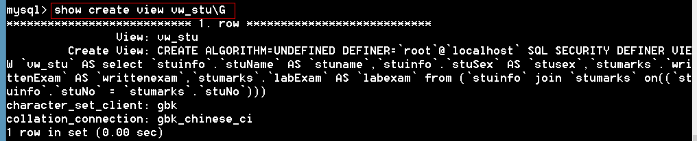
4.4.5 显示所有视图
xxxxxxxxxx #方法一：mysql> show tables;+------------------+| Tables_in_itcast |+------------------+| stu || stuinfo || stumarks || t1 || t2 || vw_stu |# 方法二mysql> select table_name from information_schema.views;+------------+| table_name |+------------+| vw_stu |+------------+1 row in set (0.05 sec)+------------------+#方法三mysql> show table status where comment='view' \G*************************** 1. row *************************** Name: vw_stu Engine: NULL Version: NULL Row_format: NULL Rows: NULL Avg_row_length: NULL Data_length: NULLMax_data_length: NULL Index_length: NULL Data_free: NULL Auto_increment: NULL Create_time: NULL Update_time: NULL Check_time: NULL Collation: NULL Checksum: NULL Create_options: NULL Comment: VIEW1 row in set (0.00 sec)4.4.6 更改视图
语法：
xxxxxxxxxxalter view 视图名as select 语句例题：
xxxxxxxxxxmysql> alter view vw_stu -> as -> select * from stuinfo;Query OK, 0 rows affected (0.00 sec)4.4.7 删除视图
语法：
xxxxxxxxxxdrop view [if exists] 视图1,视图2,…例题
xxxxxxxxxxmysql> drop view vw_stu;Query OK, 0 rows affected (0.00 sec)4.4.8 视图的作用
- 筛选数据，防止未经许可访问敏感数据
- 隐藏表结构
- 降低SQL语句的复杂度
4.4.9 视图的算法
场景：找出语文成绩最高的男生和女生
xxxxxxxxxxmysql> select * from (select * from stu order by ch desc) as t group by stusex;+--------+----------+--------+--------+---------+------------+------+------+| stuNo | stuName | stuSex | stuAge | stuSeat | stuAddress | ch | math |+--------+----------+--------+--------+---------+------------+------+------+| s25321 | Tabm | 女 | 23 | 9 | 河北 | 88 | 77 || s25318 | 争青小子 | 男 | 26 | 6 | 天津 | 86 | 92 |+--------+----------+--------+--------+---------+------------+------+------+我们可以将子查询封装到视图中
xxxxxxxxxxmysql> create view vw_stu -> as -> select * from stu order by ch desc;Query OK, 0 rows affected (0.00 sec)可以将上面的子查询更改成视图，但是，结果和上面不一样
xxxxxxxxxxmysql> select * from vw_stu group by stusex;+--------+---------+--------+--------+---------+------------+------+------+| stuNo | stuName | stuSex | stuAge | stuSeat | stuAddress | ch | math |+--------+---------+--------+--------+---------+------------+------+------+| s25301 | 张秋丽 | 男 | 18 | 1 | 北京 | 80 | NULL || s25303 | 李斯文 | 女 | 22 | 2 | 北京 | 55 | 82 |+--------+---------+--------+--------+---------+------------+------+------+原因：这是因为视图的算法造成的
xxxxxxxxxx1. merge：合并算法，将视图的语句和外层的语句合并后在执行。2. temptable：临时表算法，将视图生成一个临时表，再执行外层语句3. undefined：未定义，MySQL到底用merge还是用temptable由MySQL决定，这是一个默认的算法，一般视图都会选择merge算法，因为merge效率高。
解决：在创建视图的时候指定视图的算法
xxxxxxxxxxcreate algorithm=temptable view 视图名as select 语句指定算法创建视图
xxxxxxxxxxmysql> create algorithm=temptable view vw_stu -> as -> select * from stu order by ch desc;Query OK, 0 rows affected (0.00 sec)mysql> select * from vw_stu group by stusex; # 结果是一致的+--------+----------+--------+--------+---------+------------+------+------+| stuNo | stuName | stuSex | stuAge | stuSeat | stuAddress | ch | math |+--------+----------+--------+--------+---------+------------+------+------+| s25321 | Tabm | 女 | 23 | 9 | 河北 | 88 | 77 || s25318 | 争青小子 | 男 | 26 | 6 | 天津 | 86 | 92 |+--------+----------+--------+--------+---------+------------+------+------+4.5 事务【transaction】
- 事务是一个不可分割的执行单元
- 事务作为一个整体要么一起执行，要么一起回滚
插入测试数据
xxxxxxxxxxmysql> create table bank( -> cardid char(4) primary key, -> money int -> );Query OK, 0 rows affected (0.00 sec)mysql> insert into bank values ('1001',1000),('1002',100);Query OK, 2 rows affected (0.00 sec)Records: 2 Duplicates: 0 Warnings: 04.5.1 事务操作
xxxxxxxxxx开启事务：start transaction或begin [work]提交事务：commit回滚事务：rollback例题：
xxxxxxxxxxmysql> delimiter // # 更改定界符mysql> start transaction; # 开启事务 -> update bank set money=money-100 where cardid='1001'; -> update bank set money=money+100 where cardid='1002' //Query OK, 0 rows affected (0.00 sec)mysql> commit // # 提交事务mysql> rollback // # 回滚事务xxxxxxxxxx思考：事务什么时候产生？什么时候结束？答：开启的时候产生，提交事务或回滚事务都结束脚下留心：只有innodb和BDB才支持事务，myisam不支持事务。
4.5.2 设置事务的回滚点
语法：
xxxxxxxxxx设置回滚点： savepoint 回滚点名回滚到回滚点： rollback to 回滚点例题：
xxxxxxxxxxmysql> start transaction;Query OK, 0 rows affected (0.00 sec)mysql> insert into bank values ('1003',1000);Query OK, 1 row affected (0.00 sec)mysql> savepoint aa; # 设置回滚点 aaQuery OK, 0 rows affected (0.00 sec)mysql> insert into bank values ('1004',500);Query OK, 1 row affected (0.00 sec) mysql> savepoint bb; # 设置回滚点bbQuery OK, 0 rows affected (0.00 sec) mysql> rollback to aa; # 回滚到aa点Query OK, 0 rows affected (0.00 sec)mysql> commit; # 提交事务mysql> select * from bank ;+--------+-------+| cardid | money |+--------+-------+| 1001 | 800 || 1002 | 200 || 1003 | 1000 |+--------+-------+4.5.3 事务的特性（ACID）
- 原子性（Atomicity）：事务是一个整体，不可以再分，要么一起执行，要么一起不执行。
- 一致性（Consistency）：事务完成时，数据必须处于一致的状态。
- 隔离性（Isolation）：每个事务都是相互隔离的
- 永久性（Durability）：事务完成后，对数据的修改是永久性的。
4.6 索引【index】
索引的优点：查询速度快
索引的缺点：
- 增、删、改（数据操作语句）效率低了
- 索引占用空间
4.6.1 索引的类型
- 普通索引
- 唯一索引（唯一键）
- 主键索引：只要主键就自动创建主键索引，不需要手动创建。
- 全文索引，搜索引擎使用，MySQL不支持中文的全文索引，我们通过sphinx去解决中文的全文索引。
4.6.2 创建普通索引【create index】
语法：
xxxxxxxxxxcreate index [索引名] on 表名 （字段名）alter table 表名 add index [索引的名称] （列名）例题：
xxxxxxxxxx# 创建索引方法一mysql> create index ix_stuname on stuinfo(stuname);Query OK, 0 rows affected (0.08 sec)Records: 0 Duplicates: 0 Warnings: 0# 创建索引方法二mysql> alter table stuinfo add index ix_address (stuaddress);Query OK, 0 rows affected (0.08 sec)Records: 0 Duplicates: 0 Warnings: 0# 创建表的时候就添加索引mysql> create table emp( -> id int, -> name varchar(10), -> index ix_name (name) # 创建索引 -> );Query OK, 0 rows affected (0.00 sec)4.6.3 创建唯一索引
xxxxxxxxxx语法一：create unique index 索引名 on 表名 （字段名）语法二：alter table 表名 add unqiue [index] [索引的名称] （列名）语法三：创建表的时候添加唯一索引，和创建唯一键是一样的。例题
xxxxxxxxxx# 方法一：mysql> create unique index UQ_stuname on stu(stuname);Query OK, 0 rows affected (0.06 sec)Records: 0 Duplicates: 0 Warnings: 0# 方法二：mysql> alter table stu add unique UQ_address (stuaddress);Query OK, 0 rows affected (0.02 sec)Records: 0 Duplicates: 0 Warnings: 0# 方法三mysql> create table stu2( -> id int, -> name varchar(20), -> unique UQ_name(name) -> );Query OK, 0 rows affected (0.01 sec)4.6.4 删除索引
语法
xxxxxxxxxxdrop index 索引名 on 表名例题
xxxxxxxxxxmysql> drop index ix_stuname on stuinfo;Query OK, 0 rows affected (0.03 sec)Records: 0 Duplicates: 0 Warnings: 04.6.5 创建索引的指导原则
- 该列用于频繁搜索
- 改列用于排序
- 公共字段要创建索引
- 如果表中的数据很少，不需要创建索引。MySQL搜索索引的时间比逐条搜索数据的时间要长。
- 如果一个字段上的数据只有几个不同的值，改字段不适合做索引，比如性别。
4.7 函数
4.7.1 数字类
xxxxxxxxxxmysql> select rand(); # 生成随机数+---------------------+| rand() |+---------------------+| 0.18474003969201822 |+---------------------+1 row in set (0.00 sec)mysql> select * from stuinfo order by rand(); # 随机排序mysql> select * from stuinfo order by rand() limit 2; # 随机抽两个学生+--------+----------+--------+--------+---------+------------+| stuNo | stuName | stuSex | stuAge | stuSeat | stuAddress |+--------+----------+--------+--------+---------+------------+| s25305 | 诸葛丽丽 | 女 | 23 | 7 | 河南 || s25304 | 欧阳俊雄 | 男 | 28 | 4 | 天津 |+--------+----------+--------+--------+---------+------------+2 rows in set (0.00 sec)mysql> select round(3.5); #四舍五入+------------+| round(3.5) |+------------+| 4 |+------------+1 row in set (0.00 sec)mysql> select ceil(3.1); # 向上取整+-----------+| ceil(3.1) |+-----------+| 4 |+-----------+1 row in set (0.00 sec)mysql> select floor(3.9); # 向下取整+------------+| floor(3.9) |+------------+| 3 |+------------+1 row in set (0.00 sec)mysql> select truncate(3.1415926,3); # 截取数字+-----------------------+| truncate(3.1415926,3) |+-----------------------+| 3.141 |+-----------------------+1 row in set (0.00 sec)4.7.2 字符串类
xxxxxxxxxxmysql> select ucase('i am a boy!'); # 转成大写+----------------------+| ucase('i am a boy!') |+----------------------+| I AM A BOY! |+----------------------+1 row in set (0.00 sec)mysql> select lcase('I Am A Boy!'); #转成小写+----------------------+| lcase('I Am A Boy!') |+----------------------+| i am a boy! |+----------------------+1 row in set (0.00 sec)mysql> select left('abcde',3); # 从左边开始截取，截取3个+-----------------+| left('abcde',3) |+-----------------+| abc |+-----------------+1 row in set (0.00 sec)mysql> select right('abcde',3); # 从右边开始截取，截取3个+------------------+| right('abcde',3) |+------------------+| cde |+------------------+1 row in set (0.00 sec)mysql> select substring('abcde',2,3); #从第2个位置开始截取，截取3个【位置从1开始】+------------------------+| substring('abcde',2,3) |+------------------------+| bcd |+------------------------+1 row in set (0.00 sec)mysql> select concat('中国','上海'); # 字符串相连+-----------------------+| concat('中国','上海') |+-----------------------+| 中国上海 |+-----------------------+1 row in set (0.00 sec)mysql> select concat(stuname,'-',stusex) from stuinfo; # 将表中的姓名和性别连接起来+----------------------------+| concat(stuname,'-',stusex) |+----------------------------+| 张秋丽-男 || 李文才-男 || 李斯文-女 || 欧阳俊雄-男 || 诸葛丽丽-女 || 争青小子-男 || 梅超风-女 |+----------------------------+7 rows in set (0.00 sec)# coalesce(字段1，字段2) 如果字段1不为空就显示字段1，否则，显示字段2mysql> select stuname,coalesce(writtenexam,'缺考'),coalesce(labexam,'缺考') from stuinfo natural left join stumarks; # 将考试成绩为空的显示为缺考+----------+------------------------------+--------------------------+| stuname | coalesce(writtenexam,'缺考') | coalesce(labexam,'缺考') |+----------+------------------------------+--------------------------+| 张秋丽 | 77 | 82 || 李文才 | 50 | 90 || 李斯文 | 88 | 58 || 欧阳俊雄 | 65 | 50 || 诸葛丽丽 | 缺考 | 缺考 || 争青小子 | 56 | 48 || 梅超风 | 缺考 | 缺考 |+----------+------------------------------+--------------------------+mysql> select length('锄禾日当午'); # 字节长度+----------------------+| length('锄禾日当午') |+----------------------+| 10 |+----------------------+1 row in set (0.00 sec)mysql> select char_length('锄禾日当午'); # 字符个数+---------------------------+| char_length('锄禾日当午') |+---------------------------+| 5 |+---------------------------+1 row in set (0.00 sec)4.7.3 时间类
xxxxxxxxxxmysql> select unix_timestamp(); #获取时间戳+------------------+| unix_timestamp() |+------------------+| 1537084508 |+------------------+1 row in set (0.00 sec)mysql> select from_unixtime(unix_timestamp()); # 将时间戳转成年-月-日 小时:分钟:秒的格式+---------------------------------+| from_unixtime(unix_timestamp()) |+---------------------------------+| 2018-09-16 15:55:56 |+---------------------------------+1 row in set (0.00 sec)mysql> select now(); # 获取当前日期时间+---------------------+| now() |+---------------------+| 2018-09-16 15:57:04 |+---------------------+1 row in set (0.00 sec)mysql> select year(now()) 年,month(now()) 月, day(now()) 日,hour(now()) 小,minute(now()) 分钟,second(now()) 秒;+------+------+------+------+------+------+| 年 | 月 | 日 | 小时 | 分钟 | 秒 |+------+------+------+------+------+------+| 2018 | 9 | 16 | 15 | 59 | 14 |+------+------+------+------+------+------+1 row in set (0.00 sec)mysql> select dayname(now()) 星期,monthname(now()),dayofyear(now()) 本年的第几天;+--------+------------------+--------------+| 星期 | monthname(now()) | 本年的第几天 |+--------+------------------+--------------+| Sunday | September | 259 |+--------+------------------+--------------+1 row in set (0.00 sec)mysql> select datediff(now(),'2008-8-8'); # 日期相减+----------------------------+| datediff(now(),'2008-8-8') |+----------------------------+| 3691 |+----------------------------+1 row in set (0.00 sec)mysql> select convert(now(),date),convert(now(),time); # 将now()转成日期和时间+---------------------+---------------------+| convert(now(),date) | convert(now(),time) |+---------------------+---------------------+| 2018-09-16 | 16:07:24 |+---------------------+---------------------+mysql> select cast(now() as date),cast(now() as time); # 将now()转成日期和时间+---------------------+---------------------+| cast(now() as date) | cast(now() as time) |+---------------------+---------------------+| 2018-09-16 | 16:08:03 |+---------------------+---------------------+1 row in set (0.00 sec)4.7.4 加密函数
xxxxxxxxxx+----------------------------------+------------------------------------------+| md5('root') | sha('root') |+----------------------------------+------------------------------------------+| 63a9f0ea7bb98050796b649e85481845 | dc76e9f0c0006e8f919e0c515c66dbba3982f785 |+----------------------------------+------------------------------------------+1 row in set (0.00 sec)4.7.5 判断函数
语法
xxxxxxxxxxif(表达式,值1,值2)例题：
xxxxxxxxxxmysql> select if(10%2=0,'偶数','奇数');+--------------------------+| if(10%2=0,'偶数','奇数') |+--------------------------+| 偶数 |+--------------------------+1 row in set (0.00 sec)# 语文和数学都超过60分才通过mysql> select stuname,ch,math,if(ch>=60 && math>=60,'通过','不通过') '是否通过' from stu;+----------+------+------+----------+| stuname | ch | math | 是否通过 |+----------+------+------+----------+| 张秋丽 | 80 | NULL | 不通过 || 李文才 | 77 | 76 | 通过 || 李斯文 | 55 | 82 | 不通过 || 欧阳俊雄 | NULL | 74 | 不通过 || 诸葛丽丽 | 72 | 56 | 不通过 || 争青小子 | 86 | 92 | 通过 || 梅超风 | 74 | 67 | 通过 || Tom | 65 | 67 | 通过 || Tabm | 88 | 77 | 通过 |+----------+------+------+----------+9 rows in set (0.00 sec)4.8 预处理
预编译一次，可以多次执行。用来解决一条SQL语句频繁执行的问题。
xxxxxxxxxx预处理语句：prepare 预处理名字 from ‘sql语句’执行预处理：execute 预处理名字 [using 变量]
例题一：
xxxxxxxxxxmysql> prepare stmt from 'select * from stuinfo'; # 创建预处理Query OK, 0 rows affected (0.00 sec)Statement preparedmysql> execute stmt; # 执行预处理+--------+----------+--------+--------+---------+------------+| stuNo | stuName | stuSex | stuAge | stuSeat | stuAddress |+--------+----------+--------+--------+---------+------------+| s25301 | 张秋丽 | 男 | 18 | 1 | 北京 || s25302 | 李文才 | 男 | 31 | 3 | 上海 || s25303 | 李斯文 | 女 | 22 | 2 | 北京 || s25304 | 欧阳俊雄 | 男 | 28 | 4 | 天津 || s25305 | 诸葛丽丽 | 女 | 23 | 7 | 河南 || s25318 | 争青小子 | 男 | 26 | 6 | 天津 || s25319 | 梅超风 | 女 | 23 | 5 | 河北 |+--------+----------+--------+--------+---------+------------+7 rows in set (0.00 sec)例题二：传递参数
xxxxxxxxxxmysql> delimiter // mysql> prepare stmt from 'select * from stuinfo where stuno=?' // -- ?是位置占位符Query OK, 0 rows affected (0.00 sec)Statement preparedmysql> set @id='s25301'; -- 变量以@开头，通过set给变量赋值 -> execute stmt using @id // -- 执行预处理，传递参数Query OK, 0 rows affected (0.00 sec)+--------+---------+--------+--------+---------+------------+| stuNo | stuName | stuSex | stuAge | stuSeat | stuAddress |+--------+---------+--------+--------+---------+------------+| s25301 | 张秋丽 | 男 | 18 | 1 | 北京 |+--------+---------+--------+--------+---------+------------+1 row in set (0.00 sec)xxxxxxxxxx脚下留心：1、?是位置占位符2、变量以@开头3、通过set给变量赋值
例题三：传递多个参数
xxxxxxxxxxmysql> prepare stmt from 'select * from stuinfo where stusex=? and stuaddress=?' //Query OK, 0 rows affected (0.00 sec)Statement preparedmysql> set @sex='男'; -> set @addr='北京'; -> execute stmt using @sex,@addr //Query OK, 0 rows affected (0.00 sec)Query OK, 0 rows affected (0.00 sec)+--------+---------+--------+--------+---------+------------+| stuNo | stuName | stuSex | stuAge | stuSeat | stuAddress |+--------+---------+--------+--------+---------+------------+| s25301 | 张秋丽 | 男 | 18 | 1 | 北京 |+--------+---------+--------+--------+---------+------------+1 row in set (0.00 sec)4.9 存储过程【procedure】
4.7.1 存储过程的优点
- 存储过程可以减少网络流量
- 允许模块化设计
- 支持事务
4.7.2 创建存储过程
语法：
xxxxxxxxxxcreate procedure 存储过程名(参数)begin //sql语句end;脚下留心：由于过程中有很多SQL语句，每个语句的结束都要用（；）结束。默认情况下，分号既表示语句结束，又表示向服务器发送SQL语句。我们希望分号仅表示语句的结束，不要将SQL语句发送到服务器执行，通过delimiter来更改结束符。例题
xxxxxxxxxxmysql> delimiter //mysql> create procedure proc() -- 创建存储过程 -> begin -> select * from stuinfo; -> end //Query OK, 0 rows affected (0.00 sec)4.7.3 调用存储过程
语法：
xxxxxxxxxxcall 存储过程名()例题：
xxxxxxxxxxmysql> call proc() // -- 调用存储过程+--------+----------+--------+--------+---------+------------+| stuNo | stuName | stuSex | stuAge | stuSeat | stuAddress |+--------+----------+--------+--------+---------+------------+| s25301 | 张秋丽 | 男 | 18 | 1 | 北京 || s25302 | 李文才 | 男 | 31 | 3 | 上海 || s25303 | 李斯文 | 女 | 22 | 2 | 北京 || s25304 | 欧阳俊雄 | 男 | 28 | 4 | 天津 || s25305 | 诸葛丽丽 | 女 | 23 | 7 | 河南 || s25318 | 争青小子 | 男 | 26 | 6 | 天津 || s25319 | 梅超风 | 女 | 23 | 5 | 河北 |+--------+----------+--------+--------+---------+------------+7 rows in set (0.00 sec)4.7.4 删除存储过程
语法
xxxxxxxxxxdrop procedure [if exists] 存储过程名例题：
xxxxxxxxxxmysql> drop procedure proc // -- 删除存储过程Query OK, 0 rows affected (0.00 sec)4.7.5 查看存储过程的信息
xxxxxxxxxxshow create procedure 存储过程名\G例题
xxxxxxxxxxmysql> show create procedure proc \G*************************** 1. row *************************** Procedure: proc sql_mode: STRICT_TRANS_TABLES,NO_AUTO_CREATE_USER,NO_ENGINE_SUBSTITUTION Create Procedure: CREATE DEFINER=`root`@`localhost` PROCEDURE `proc`()beginselect * from stuinfo;endcharacter_set_client: gbkcollation_connection: gbk_chinese_ci Database Collation: utf8_general_ci1 row in set (0.00 sec)4.7.6 显示所有的存储过程
xxxxxxxxxxmysql> show procedure status \G4.7.7 存储过程的参数
存储过程的参数分为：输入参数（in）【默认】，输出参数（out），输入输出参数（inout）
存储过程不能使用return返回值，要返回值只能通过“输出参数”来向外传递值。
例题一：传递学号，获取对应的信息
xxxxxxxxxxmysql> create procedure proc(in param varchar(10)) -- 输入参数 -> select * from stuinfo where stuno=param //Query OK, 0 rows affected (0.00 sec)mysql> call proc('s25301') //+--------+---------+--------+--------+---------+------------+| stuNo | stuName | stuSex | stuAge | stuSeat | stuAddress |+--------+---------+--------+--------+---------+------------+| s25301 | 张秋丽 | 男 | 18 | 1 | 北京 |+--------+---------+--------+--------+---------+------------+1 row in set (0.00 sec)例题二：查找同桌
xxxxxxxxxxmysql> create procedure proc(name varchar(10)) -> begin -> declare seat tinyint; -- 声明局部变量 -> select stuseat into seat from stuinfo where stuname=name; -- 将座位号保存到变量中 -> select * from stuinfo where stuseat=seat+1 or stuseat=seat-1; -- 查找同桌 -> end //Query OK, 0 rows affected (0.00 sec)mysql> call proc('李文才') //+--------+----------+--------+--------+---------+------------+| stuNo | stuName | stuSex | stuAge | stuSeat | stuAddress |+--------+----------+--------+--------+---------+------------+| s25303 | 李斯文 | 女 | 22 | 2 | 北京 || s25304 | 欧阳俊雄 | 男 | 28 | 4 | 天津 |+--------+----------+--------+--------+---------+------------+2 rows in set (0.00 sec)强调
xxxxxxxxxx1、通过declare关键字声明局部变量；全局变量@开头就可以了2、给变量赋值有两种方法方法一：set 变量名=值方法二：select 字段 into 变量 from 表 where 条件3、声明的变量不能与列名同名
例题三：输出参数
xxxxxxxxxxmysql> create procedure proc(num int, out result int) //out 表示输出参数 -> begin -> set result=num*num; -> end //Query OK, 0 rows affected (0.00 sec)mysql> call proc(10,@result) //Query OK, 0 rows affected (0.00 sec)mysql> select @result //+---------+| @result |+---------+| 100 |+---------+1 row in set (0.00 sec)
例题四：输入输出参数
xxxxxxxxxxmysql> create procedure proc(inout num int) # inout 表示是输入输出参数 -> begin -> set num=num*num; -> end //Query OK, 0 rows affected (0.00 sec)mysql> set @num=10; -> call proc(@num); -> select @num //Query OK, 0 rows affected (0.00 sec)Query OK, 0 rows affected (0.00 sec)+------+| @num |+------+| 100 |+------+1 row in set (0.00 sec)
4.10 GO连接MySQL
- 因为Go语言没有提供任何官方数据库驱动，所以需要安装第三方函数库。
- 由于在github上安装，所以需要安装git软件，安装过程一直点击下一步即可。安装完成后需要配置环境变量
4.10.1 安装git
git软件
安装完毕后，配置git的环境变量，这样可以使用get的指令
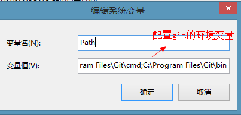
4.10.2 安装数据库驱动
设置GOPATH的环境变量，这样驱动才会下载到项目根目录中。
在cmd命令窗口中输入如下命令安装驱动
xxxxxxxxxxgo get github.com/go-sql-driver/mysql这一命令会从代码中获取驱动的具体代码，并将这些代码放置到包库中，当需要用到驱动的时候，编译器会把驱动代码与用户编写的代码一同编译。安装完毕后，会在GOPATH下看到下载的驱动
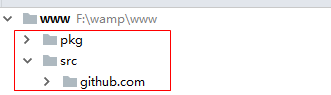
4.10.3 连接数据库
1、在src目录下创建demo.go文件，导入数据库驱动
xxxxxxxxxximport ( "database/sql" _ "github.com/go-sql-driver/mysql")注意：程序在操作数据库的时候只需要用到database/sql，而不需要直接使用数据库驱动，所以程序在导入数据库驱动的时候将这个包的名字设置成下划线。2、通过sql.open()连接数据库
xxxxxxxxxxsql.open(驱动名,数据源dsn)(*DB,err)数据源语法："用户名:密码@[连接方式](主机名:端口号)/数据库名"注意：open()在执行时不会真正的与数据库进行连接，只是设置连接数据库需要的参数ping()方法才是连接数据库
3、执行SQL语句
创建测试表
xxxxxxxxxxmysql> create table stu( -> id int primary key, -> name varchar(10) -> );Query OK, 0 rows affected (0.02 sec)操作数据
xxxxxxxxxxpackage mainimport ( "database/sql" _ "github.com/go-sql-driver/mysql" "fmt")func main(){ //"用户名:密码@[连接方式](主机名:端口号)/数据库名" db,_:=sql.Open("mysql","root:root@(127.0.0.1:3306)/itcast") // 设置连接数据库的参数 defer db.Close() //关闭数据库 err:=db.Ping() //连接数据库 if err!=nil{ fmt.Println("数据库连接失败") return } //操作一：执行数据操作语句 /* sql:="insert into stu values (2,'berry')" result,_:=db.Exec(sql) //执行SQL语句 n,_:=result.RowsAffected(); //获取受影响的记录数 fmt.Println("受影响的记录数是",n) */ //操作二：执行预处理 /* stu:=[2][2] string{{"3","ketty"},{"4","rose"}} stmt,_:=db.Prepare("insert into stu values (?,?)") //获取预处理语句对象 for _,s:=range stu{ stmt.Exec(s[0],s[1]) //调用预处理语句 } */ //操作三：单行查询 /* var id,name string rows:=db.QueryRow("select * from stu where id=4") //获取一行数据 rows.Scan(&id,&name) //将rows中的数据存到id,name中 fmt.Println(id,"--",name) */ //操作四：多行查询 rows,_:=db.Query("select * from stu") //获取所有数据 var id,name string for rows.Next(){ //循环显示所有的数据 rows.Scan(&id,&name) fmt.Println(id,"--",name) }}4.11 作业
1、 显示地区及每个地区参加考试的人数，并按人数降序排列。
xxxxxxxxxxselect stuaddress,count(writtenexam) c from stuinfo left join stumarks using(stuno) group by stuaddress order by c desc;2、 显示有学生参加考试的地区
方法一：过滤
xxxxxxxxxxselect stuaddress,count(writtenexam) c from stuinfo left join stumarks using(stuno) group by stuaddress having c>0;方法二：链接查询
xxxxxxxxxxselect distinct stuaddress c from stuinfo right join stumarks using(stuno) ;3、 显示男生和女生的人数
方法一：
xxxxxxxxxxselect stusex,count() from stuinfo where stusex='男' union select stusex,count() from stuinfo where stusex='女';方法二：
xxxxxxxxxxselect sum(stusex='男') 男,sum(stusex='女') 女 from stuinfo;4、 显示每个地区的男生和女生和总人数
xxxxxxxxxxselect stuaddress,count(stusex) 总人数, sum(stusex='男') 男,sum(stusex='女') 女 from stuinfo group by stuaddress